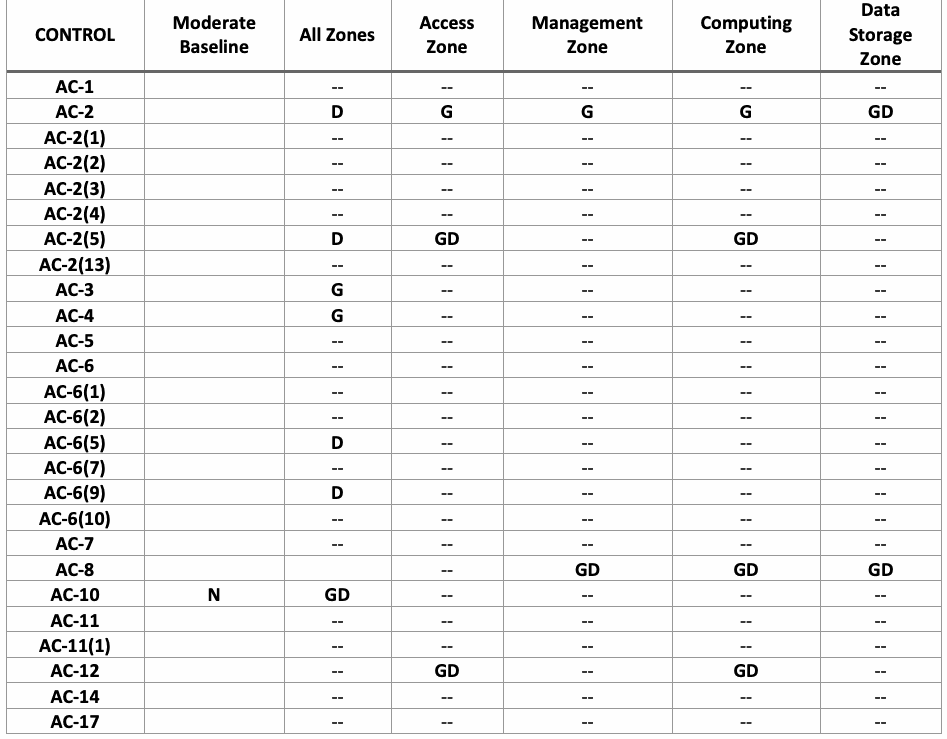
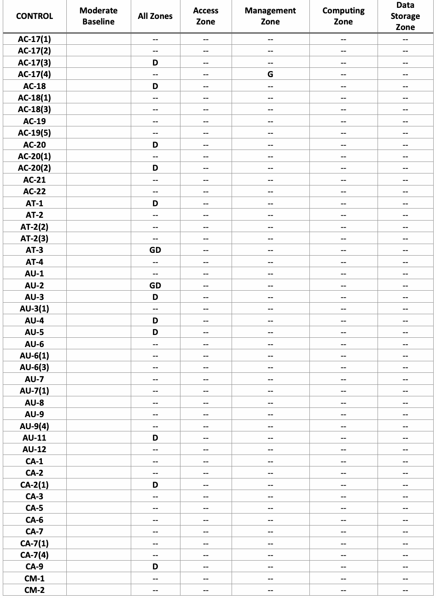
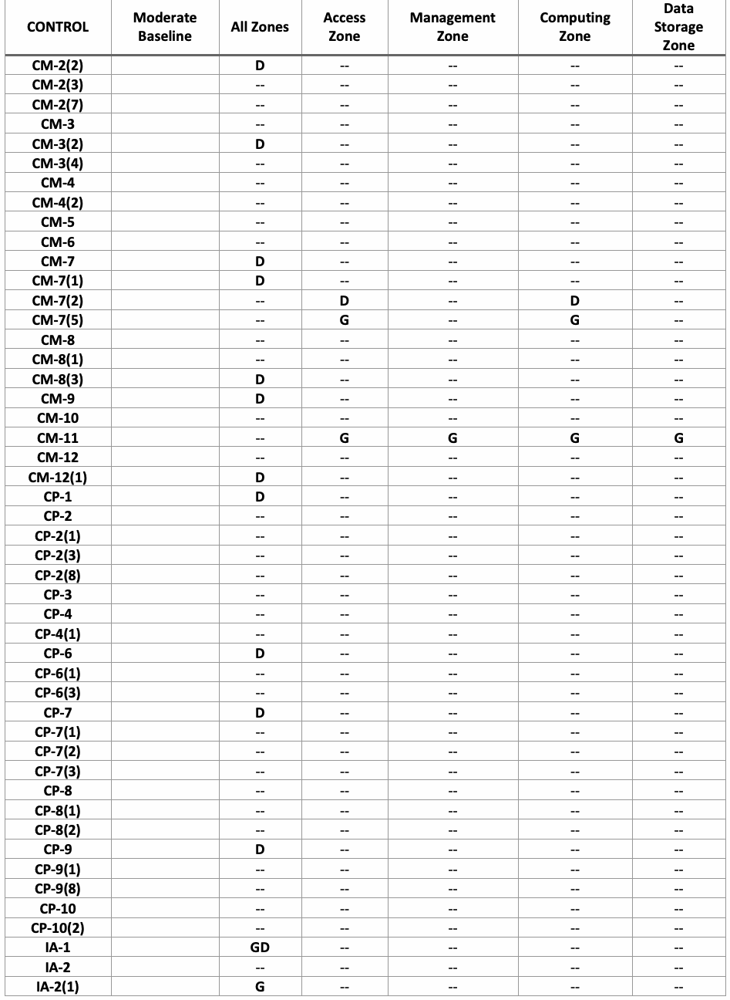
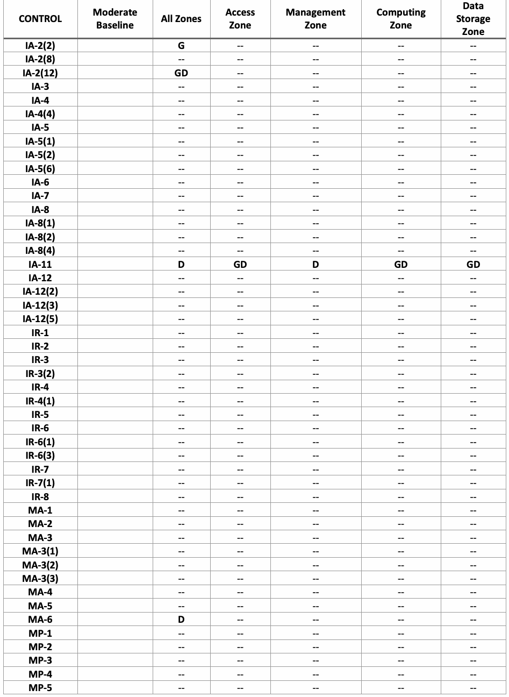
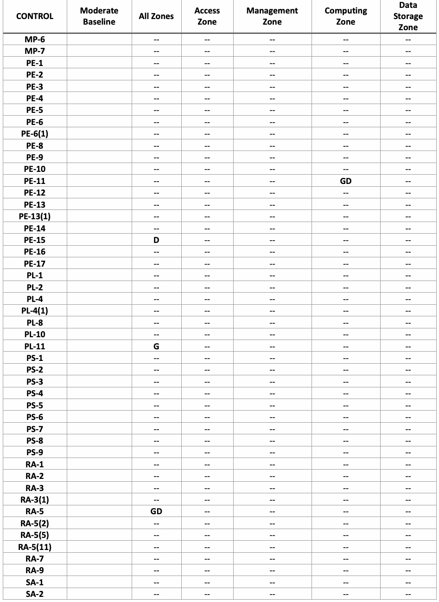
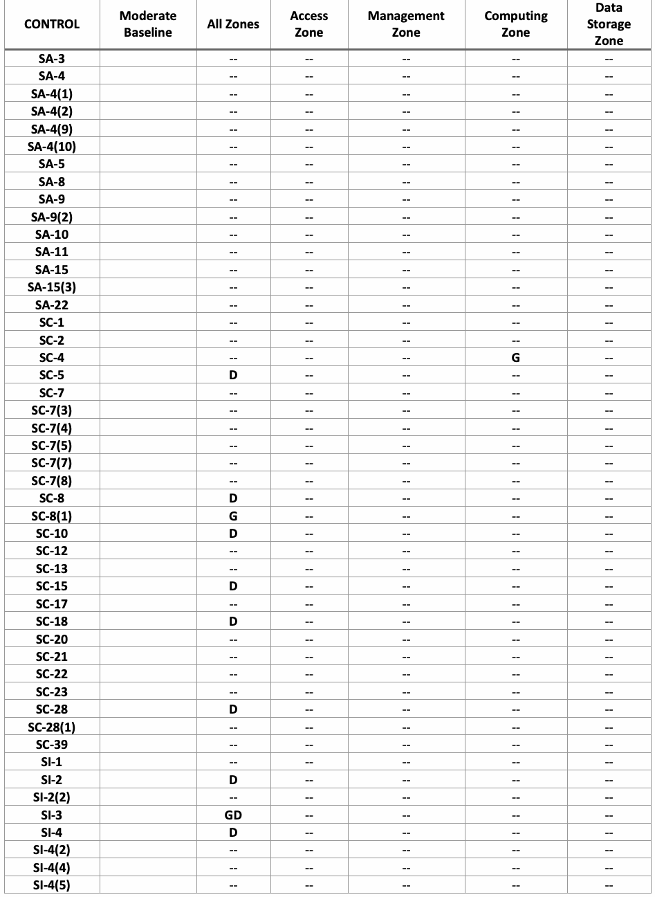
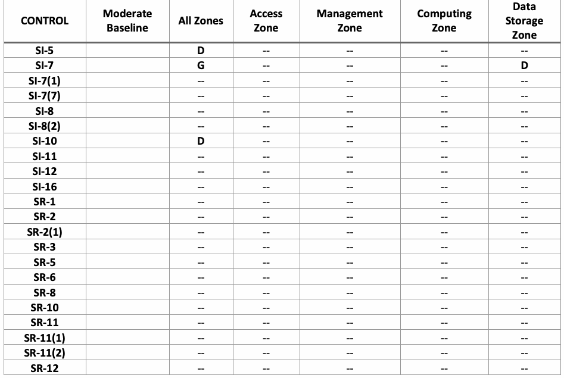

NIST SP 800-234 日本語訳
英語タイトル : High-Performance Computing (HPC) Security Overlay日本語タイトル : 高性能計算（HPC）セキュリティオーバーレイ
公開日 : 2026-05-04
原文URL : https://csrc.nist.gov/pubs/sp/800/234/final
翻訳編集 : 自動生成, 原文取得日 : 2026-09-26, 訳文 : 209 / 209 ブロック
[要約] SP 800-234 は、ハイパフォーマンスコンピューティング（HPC）システムに固有のセキュリティ特性と要件に対処するために設計された、HPCセキュリティオーバーレイを示す文書です。SP 800-53Bの中程度影響ベースラインに基づき、ロールベースのアクセス制御、ログ記録、ユーザーセッション、コンティンジェンシープランニング、共有GPUなどの調整されたセキュリティ管理策の仕様を示します。HPCは大規模なシミュレーションやAI・機械学習モデルのトレーニングに使われ、AIモデルや機密データを守り、HPCのメリットを最大限に活かすにはHPCシステムのセキュリティ確保が不可欠であるとしています。
有志による非公式の日本語訳です。
NIST Special Publication 800
NIST 特別刊行物 800
NIST SP 800-234
NIST SP 800-234
High-Performance Computing (HPC)
ハイパフォーマンスコンピューティング（HPC）
Security Overlay
セキュリティオーバーレイ
Yang Guo Jeremy Licata Jeff Neel Gary Key James Waterman Ian Lee Catherine Hinton David Shrader Andrew Prout Albert Reuther Ted Bohrer Katsutoshi Ishisoko Kyle Earley Aron Warren Tony DeNardo Ian Czarnezki Erik Deumens
Yang Guo Jeremy Licata Jeff Neel Gary Key James Waterman Ian Lee Catherine Hinton David Shrader Andrew Prout Albert Reuther Ted Bohrer Katsutoshi Ishisoko Kyle Earley Aron Warren Tony DeNardo Ian Czarnezki Erik Deumens
This publication is available free of charge from: https://doi.org/10.6028/NIST.SP.800-234
本出版物は、以下より無料で入手可能です: https://doi.org/10.6028/NIST.SP.800-234
NIST Special Publication 800
NIST 特別刊行物 800
NIST SP 800-234
NIST SP 800-234
High-Performance Computing (HPC)
ハイパフォーマンスコンピューティング（HPC）
Security Overlay
セキュリティオーバーレイ
Yang Guo
Jeremy Licata
Computer Security Division
Information Technology Laboratory
Yang Guo
Jeremy Licata
Computer Security Division
Information Technology Laboratory
Jeff Neel
Argonne National Laboratory
Jeff Neel
Argonne National Laboratory
Gary Key*
James Waterman
DoD HPCMP
Gary Key*
James Waterman
DoD HPCMP
Ian Lee
Lawrence Livermore National Laboratory/ShorePoint, LLC
Ian Lee
Lawrence Livermore National Laboratory/ShorePoint, LLC
Catherine Hinton
David Shrader
Los Alamos National Laboratory
Catherine Hinton
David Shrader
Los Alamos National Laboratory
Andrew Prout
Albert Reuther
MIT Lincoln Laboratory
Andrew Prout
Albert Reuther
MIT Lincoln Laboratory
Ted Bohrer
Katsutoshi Ishisoko
NASA
Ted Bohrer
Katsutoshi Ishisoko
NASA
Kyle Earley
Ohio Supercomputer Center
Kyle Earley
Ohio Supercomputer Center
Aron Warren
Tony DeNardo
Sandia National Laboratories
Aron Warren
Tony DeNardo
Sandia National Laboratories
Ian Czarnezki
University of Arkansas
Ian Czarnezki
University of Arkansas
Erik Deumens
University of Florida
Erik Deumens
University of Florida
This publication is available free of charge from: https://doi.org/10.6028/NIST.SP.800-234
本出版物は以下より無料で入手可能である：https://doi.org/10.6028/NIST.SP.800-234
May 2026
2026年5月
［米国商務省の紋章。公的な標章のため、この非公式サイトには掲載していない。原本 PDF を参照。］
U.S. Department of Commerce Howard Lutnick, Secretary
米国商務省 ハワード・ラトニック長官
National Institute of Standards and Technology
国立標準技術研究所
Craig Burkhardt, Acting Under Secretary of Commerce for Standards and Technology and Acting NIST Director
クレイグ・バークハート、標準・技術担当商務次官代行 兼 NIST所長代行
Certain equipment, instruments, software, or materials, commercial or non-commercial, are identified in this paper in order to specify the experimental procedure adequately. Such identification does not imply recommendation or endorsement of any product or service by NIST, nor does it imply that the materials or equipment identified are necessarily the best available for the purpose.
実験手順を適切に規定するため、商用か非商用かを問わず、特定の機器、計器、ソフトウェア、または材料を本文書で特定している。このような特定は、NISTによるいかなる製品またはサービスの推奨や支持を意味するものではなく、特定された材料や機器が必ずしもその目的に利用可能な最善のものであることを意味するものでもない。
There may be references in this publication to other publications currently under development by NIST in accordance with its assigned statutory responsibilities. The information in this publication, including concepts and methodologies, may be used by federal agencies even before the completion of such companion publications. Thus, until each publication is completed, current requirements, guidelines, and procedures, where they exist, remain operative. For planning and transition purposes, federal agencies may wish to closely follow the development of these new publications by NIST.
本出版物には、割り当てられた法的責任に従ってNISTが現在策定中の他の出版物への言及が含まれている場合がある。概念や方法論を含む本出版物の情報は、そのような関連出版物の完成前であっても連邦機関が利用してよい。したがって、各出版物が完成するまでは、現行の要件、ガイドライン、および手順が存在する場合、それらは引き続き有効である。計画および移行を目的として、連邦機関はNISTによるこれらの新規出版物の策定状況を注視することが望ましい。
Organizations are encouraged to review all draft publications during public comment periods and provide feedback to NIST. Many NIST cybersecurity publications, other than the ones noted above, are available at https://csrc.nist.gov/publications.
組織は、パブリックコメント期間中にすべてのドラフト文書をレビューし、NISTにフィードバックを提供することが推奨される。上記以外の多くのNISTサイバーセキュリティ出版物は、https://csrc.nist.gov/publications から入手可能である。
Authority
権限
This publication has been developed by NIST in accordance with its statutory responsibilities under the Federal Information Security Modernization Act (FISMA) of 2014, 44 U.S.C. § 3551 et seq., Public Law (P.L.) 113-283. NIST is responsible for developing information security standards and guidelines, including minimum requirements for federal information systems, but such standards and guidelines shall not apply to national security systems without the express approval of appropriate federal officials exercising policy authority over such systems. This guideline is consistent with the requirements of the Office of Management and Budget (OMB) Circular A-130.
本出版物は、2014年連邦情報セキュリティ近代化法（FISMA）（合衆国法典第44編第3551条以下、公法（P.L.）113-283）に基づく法定義務に従ってNISTにより策定された。NISTは、連邦情報システムの最低要件を含む情報セキュリティ基準およびガイドラインを開発する責任を負うが、そのようなシステムに対してポリシー権限を行使する適切な連邦政府職員の明示的な承認がない限り、それらの基準およびガイドラインが国家安全保障システムに適用されることはない。本ガイドラインは、行政管理予算局（OMB）サーキュラーA-130の要件に準拠している。
Nothing in this publication should be taken to contradict the standards and guidelines made mandatory and binding on federal agencies by the Secretary of Commerce under statutory authority. Nor should these guidelines be interpreted as altering or superseding the existing authorities of the Secretary of Commerce, Director of the OMB, or any other federal official. This publication may be used by nongovernmental organizations on a voluntary basis and is not subject to copyright in the United States. Attribution would, however, be appreciated by NIST.
本出版物のいかなる内容も、商務長官が法定権限に基づき連邦機関に対して義務的かつ拘束力を持つものとした基準およびガイドラインと矛盾するものと解釈されてはならない。また、これらのガイドラインが、商務長官、OMB局長、またはその他の連邦職員の既存の権限を変更するもの、またはそれに優先するものと解釈されてもならない。本出版物は、非政府組織によって自発的に使用することができ、米国内における著作権の対象とはならない。ただし、NISTへの帰属表示を行っていただければ幸いである。
NIST Technical Series Policies
Copyright, Use, and Licensing Statements
NIST Technical Series Publication Identifier Syntax
NISTテクニカルシリーズのポリシー
著作権、使用、およびライセンスに関する記述
NISTテクニカルシリーズ出版物識別子の構文
Publication History
Approved by the NIST Editorial Review Board on 2026-04-27
発行履歴
2026-04-27にNIST編集審査委員会により承認
How to Cite this NIST Technical Series Publication
Guo Y, Licata J, Neel J, Key G, Waterman J, Lee I, Hinton C, Shrader D, Prout A, Reuther A, Bohrer T, Ishisoko K, Earley K, Warren A, DeNardo T, Czarnezki I, Deumens E (2026) High-Performance Computing (HPC) Security Overlay. (National Institute of Standards and Technology, Gaithersburg, MD), NIST Special Publication (SP) NIST SP 800-234. https://doi.org/10.6028/NIST.SP.800-234
本NISTテクニカルシリーズ出版物の引用方法
Guo Y, Licata J, Neel J, Key G, Waterman J, Lee I, Hinton C, Shrader D, Prout A, Reuther A, Bohrer T, Ishisoko K, Earley K, Warren A, DeNardo T, Czarnezki I, Deumens E (2026) High-Performance Computing (HPC) Security Overlay. (National Institute of Standards and Technology, Gaithersburg, MD), NIST Special Publication (SP) NIST SP 800-234. https://doi.org/10.6028/NIST.SP.800-234
Author ORCID iDs
Yang Guo: 0000-0002-3245-3069 Jeremy Licata: 0000-0001-8793-5471 Jeff Neel: 0009-0004-5003-9429 Ian Lee: 0000-0001-6952-2585 Catherine Hinton: 0000-0002-5230-2428 Andrew Prout: 0000-0002-4408-0247
Albert Reuther: 0000-0002-3168-3663 Kyle Earley: 0009-0009-5681-8972 Aron Warren: 0000-0002-5090-2198 Erik Deumens: 0000-0002-7398-3090
著者のORCID iD
Yang Guo: 0000-0002-3245-3069 Jeremy Licata: 0000-0001-8793-5471 Jeff Neel: 0009-0004-5003-9429 Ian Lee: 0000-0001-6952-2585 Catherine Hinton: 0000-0002-5230-2428 Andrew Prout: 0000-0002-4408-0247
Albert Reuther: 0000-0002-3168-3663 Kyle Earley: 0009-0009-5681-8972 Aron Warren: 0000-0002-5090-2198 Erik Deumens: 0000-0002-7398-3090
Contact Information sp800-234-comments@nist.gov
連絡先情報 sp800-234-comments@nist.gov
National Institute of Standards and Technology Attn: Computer Security Division, Information Technology Laboratory 100 Bureau Drive (Mail Stop 8930) Gaithersburg, MD 20899-8930
National Institute of Standards and Technology Attn: Computer Security Division, Information Technology Laboratory 100 Bureau Drive (Mail Stop 8930) Gaithersburg, MD 20899-8930
Additional Information
Additional information about this publication is available at https://csrc.nist.gov/pubs/sp/800/234/final, including related content, potential updates, and document history.
追加情報
本出版物に関する追加情報（関連コンテンツ、今後の更新情報、文書の履歴など）は、https://csrc.nist.gov/pubs/sp/800/234/final で入手できる。
All comments are subject to release under the Freedom of Information Act (FOIA).
すべてのコメントは、情報公開法（FOIA）に基づき公開される対象となる。
Abstract
概要
High-performance computing (HPC) systems provide fundamental computing infrastructure for large-scale and complex simulations, big data analysis, and the training of artificial intelligence (AI) and machine learning (ML) models, all at exceptional speeds. Securing HPC systems is essential to safeguard AI models, protect sensitive data, and realize the full benefits of HPC. The HPC system utilizes specialized hardware, software, and high-speed networks within intricate user environments, and high performance is a fundamental requirement of the system. This NIST Special Publication introduces an HPC security overlay designed to address these unique security characteristics and requirements. Built on the moderate baseline defined in NIST SP 800-53B, the overlay tailors 60 security controls from NIST SP 800-53 with supplemental guidance and/or discussion to enhance their applicability in HPC contexts. This overlay aims to provide practical, performance-conscious security guidance that can be readily adopted. For many organizations, it offers a robust foundation for securing HPC environments while also allowing for further customization to meet specific operational or mission needs. This document is intended for use by IT security managers, compliance officers, HPC system administrators, and agency program managers responsible for securing HPC environments.
ハイパフォーマンスコンピューティング（HPC）システムは、大規模で複雑なシミュレーション、ビッグデータ分析、ならびに人工知能（AI）および機械学習（ML）モデルのトレーニングに対して、卓越した速度で基本的なコンピューティングインフラストラクチャを提供する。AIモデルを保護し、機密データを守り、HPCのメリットを最大限に活かすためには、HPCシステムのセキュリティ確保が不可欠である。HPCシステムは、複雑なユーザー環境内で専用のハードウェア、ソフトウェア、高速ネットワークを利用しており、高いパフォーマンスがシステムの本質的な要件となっている。本NIST Special Publicationでは、こうした固有のセキュリティ特性と要件に対処するために設計されたHPCセキュリティオーバーレイを紹介する。NIST SP 800-53Bで定義されている中程度影響ベースラインに基づいて構築されたこのオーバーレイは、HPC環境における適用性を高めるために、補足ガイダンスおよび／または考察を用いてNIST SP 800-53の60のセキュリティ管理策を調整している。本オーバーレイは、容易に採用できる、パフォーマンスに配慮した実践的なセキュリティガイダンスを提供することを目的としている。多くの組織にとって、本オーバーレイはHPC環境を保護するための強固な基盤を提供すると同時に、特定の運用上またはミッション上のニーズを満たすためのさらなるカスタマイズも可能にする。本ドキュメントは、HPC環境の保護を担当するITセキュリティ管理者、コンプライアンス担当者、HPCシステム管理者、および機関のプログラムマネージャーによる利用を想定している。
Keywords
キーワード
high-performance computing; HPC reference architecture; HPC security; moderate control baselines; security controls; security overlay; overlay.
ハイパフォーマンスコンピューティング、HPC参照アーキテクチャ、HPCセキュリティ、中程度影響レベルの管理策ベースライン、セキュリティ管理策、セキュリティオーバーレイ、オーバーレイ。
Reports on Computer Systems Technology
コンピュータシステム技術に関する報告書
The Information Technology Laboratory (ITL) at the National Institute of Standards and Technology (NIST) promotes the U.S. economy and public welfare by providing technical leadership for the Nation’s measurement and standards infrastructure. ITL develops tests, test methods, reference data, proof of concept implementations, and technical analyses to advance the development and productive use of information technology. ITL’s responsibilities include the development of management, administrative, technical, and physical standards and guidelines for the cost-effective security and privacy of other than national security-related information in federal information systems. The Special Publication 800-series reports on ITL’s research, guidelines, and outreach efforts in information system security, and its collaborative activities with industry, government, and academic organizations.
米国国立標準技術研究所（NIST）の情報技術研究所（ITL）は、米国の測定および標準インフラストラクチャに対する技術的リーダーシップを提供することにより、米国の経済と公共の福祉を推進している。ITLは、情報技術の発展と生産的な利用を促進するために、テスト、テスト方法、参照データ、概念実証実装、および技術分析を開発している。ITLの責務には、連邦政府の情報システムにおける国家安全保障関連以外の情報の費用対効果の高いセキュリティおよびプライバシーのための、管理的、行政的、技術的、および物理的な標準とガイドラインの開発が含まれる。特別刊行物（Special Publication）800シリーズは、情報システムセキュリティにおけるITLの研究、ガイドライン、およびアウトリーチ活動と、産業界、政府、学術組織との共同活動について報告している。
Patent Disclosure Notice
特許開示に関する告知
NOTICE: ITL has requested that holders of patent claims whose use may be required for compliance with the guidance or requirements of this publication disclose such patent claims to ITL. However, holders of patents are not obligated to respond to ITL calls for patents and ITL has not undertaken a patent search in order to identify which, if any, patents may apply to this publication.
告知：ITLは、本書のガイダンスまたは要件に準拠するためにその使用が必要となる可能性がある特許請求項の保有者に対し、そのような特許請求項をITLに開示するよう要請している。ただし、特許権者には特許に関するITLの呼びかけに応じる義務はなく、ITLは本書に適用される可能性のある特許（存在する場合）を特定するための特許調査を実施していない。
As of the date of publication and following call(s) for the identification of patent claims whose use may be required for compliance with the guidance or requirements of this publication, no such patent claims have been identified to ITL.
発行日時点において、本書のガイダンスまたは要件に準拠するためにその使用が必要となる可能性がある特許請求項の特定を求めた後も、そのような特許請求項はITLに対して特定されていない。
No representation is made or implied by ITL that licenses are not required to avoid patent infringement in the use of this publication.
本書の使用において特許侵害を回避するためにライセンスが不要であるという表明は、ITLによって明示的にも黙示的にもなされていない。
Table of Contents
目次
1. Introduction — 1
1. はじめに — 1
2. HPC Security Overlay Summary — 3
2. HPCセキュリティオーバーレイの概要 — 3
3. Tailored Security Control Specifications — 10
3. 調整されたセキュリティ管理策の仕様 — 10
4. Summary — 23
4. 総括 — 23
References — 24
参考文献 — 24
List of Tables
表一覧
Table 1. A Summary of Security Controls in the HPC Control Overlay — 3
表 1. HPC管理策オーバーレイにおけるセキュリティ管理策の概要 — 3
List of Figures
図一覧
Fig. 1. HPC system reference architecture — 1
図 1. HPCシステム参照アーキテクチャ — 1
1. Introduction
1. はじめに
High-performance computing (HPC) systems provide fundamental computing infrastructure and play a pivotal role in economic competitiveness and scientific discovery. The capacity to analyze big data, rapidly conduct complex simulations, and train large-scale AI models is vital to the Nation’s vision for maintaining its global competitive edge. Therefore, it is essential to secure HPC systems to protect AI models, ensure data safety, and achieve the anticipated benefits.
ハイパフォーマンスコンピューティング（HPC）システムは、基本的な計算インフラストラクチャを提供し、経済的競争力や科学的発見において極めて重要な役割を果たしている。ビッグデータを分析し、複雑なシミュレーションを迅速に実施し、大規模なAIモデルをトレーニングする能力は、世界的な競争優位性を維持するという米国の国家ビジョンにとって不可欠である。したがって、AIモデルを保護し、データの安全性を確保し、期待されるメリットを享受するためには、HPCシステムのセキュリティを確保することが不可欠である。
This document develops an overlay, as defined in NIST Special Publication (SP) 800-53B [3]. It outlines the SP 800-53 [2] controls at the moderate impact level that require specific guidance applicable to HPC systems. This HPC security overlay was developed to provide supplemental guidance and discussions tailored to the unique characteristics of HPC systems. Its goal is to make the implementation of the security overlay achievable and effective while accounting for system performance impacts.
本書では、NIST Special Publication（SP）800-53B [3] で定義されるオーバーレイを作成する。これは、HPCシステムに適用するための個別のガイダンスが必要となる、中程度影響レベルのSP 800-53 [2] 管理策を示す。このHPCセキュリティオーバーレイは、HPCシステム特有の特性に合わせた補足ガイダンスと考察を提供するために策定された。システム性能への影響を考慮しながら、セキュリティオーバーレイを実現可能かつ効果的に実装できるようにすることを目的としている。
SP 800-223 [1] proposes a zone-based HPC reference architecture, as shown in Fig. 1.
SP 800-223 [1] では、図1に示すようなゾーンベースのHPC参照アーキテクチャが提案されている。
![Fig. 1. HPC system reference architecture. Four zones outlined by dashed lines: Access Zone (upper left), Management Zone (lower left), High-Perf. Computing Zone (upper right) and Data Storage Zone (lower right). On the far left, a cloud labeled Outside World is connected through a brick-wall icon to a vertical pipe labeled Cluster External Network. The Cluster External Network connects to the three servers of the Access Zone: Login Node(s), Data Transfer Node and Web Portal Node. A second vertical pipe in the middle, labeled Cluster Internal Network(s), connects to these three servers, to the servers of the Management Zone (Scheduler/Resource Manager, Frontend/Provisioning Server and Cluster Services), to the Compute Nodes of the High-Perf. Computing Zone, and to the Storage Nodes of the Data Storage Zone. A third vertical pipe on the right, labeled High Performance Network(s), connects the Compute Nodes and the Storage Nodes. Below the Storage Nodes are Storage Array(s).](assets/234/p0008-figure-01.png)
図1. HPCシステム参照アーキテクチャ。破線で囲まれた4つのゾーンがある。左上のアクセスゾーン（Access Zone）、左下の管理ゾーン（Management Zone）、右上の高性能コンピューティングゾーン（High-Perf. Computing Zone）、右下のデータストレージゾーン（Data Storage Zone）である。左端の Outside World（外部）と記された雲は、レンガの壁の図記号を経て、Cluster External Network（クラスタ外部ネットワーク）と記された縦の管につながる。クラスタ外部ネットワークは、アクセスゾーンの3つのサーバー、Login Node(s)（ログインノード）、Data Transfer Node（データ転送ノード）、Web Portal Node（Webポータルノード）につながる。中央の縦の管 Cluster Internal Network(s)（クラスタ内部ネットワーク）は、これら3つのサーバー、管理ゾーンのサーバー（Scheduler/Resource Manager（スケジューラ／リソースマネージャ）、Frontend/Provisioning Server（フロントエンド／プロビジョニングサーバー）、Cluster Services（クラスタサービス））、高性能コンピューティングゾーンの Compute Nodes（計算ノード）、データストレージゾーンの Storage Nodes（ストレージノード）につながる。右の3本目の縦の管 High Performance Network(s)（高性能ネットワーク）は、計算ノードとストレージノードをつなぐ。ストレージノードの下に Storage Array(s)（ストレージアレイ）がある。
Fig. 1. HPC system reference architecture
図1. HPCシステム参照アーキテクチャ
An HPC system is divided into four function zones: Access Zone, Management Zone, High-Performance Computing Zone (or Computing Zone for brevity), and Data Storage Zone. Each zone offers distinct services with specific performance requirements, features a unique architecture, and faces different threats.
HPCシステムは、アクセスゾーン、管理ゾーン、ハイパフォーマンスコンピューティングゾーン（簡潔にするためコンピューティングゾーンとも呼ぶ）、およびデータストレージゾーンの4つの機能ゾーンに分割される。各ゾーンは、特定の性能要件を持つ明確に異なるサービスを提供し、独自のアーキテクチャを備え、異なる脅威に直面している。
While many security controls from SP 800-53r5 (Revision 5) [2] are applicable, some controls need to be tailored to suit the unique architecture and performance requirements of HPC systems. Additionally, different zones within the system face different threats, providing an opportunity to create customized guidance for each zone. Implementing fine-grained controls can effectively address security needs without compromising system performance.
SP 800-53r5（改訂第5版）[2] の多くのセキュリティ管理策が適用可能である一方で、一部の管理策はHPCシステム特有のアーキテクチャおよび性能要件に合わせて調整する必要がある。さらに、システム内の異なるゾーンは異なる脅威に直面しているため、各ゾーン向けにカスタマイズされたガイダンスを作成する機会がある。きめ細かな管理策を実施することで、システム性能を損なうことなく、セキュリティ上のニーズに効果的に対処することができる。
This HPC security overlay uses the moderate baseline outlined in SP 800-53B [3] as the basic control baseline. The tailoring and augmented discussions are conducted at five levels: the entire High-Performance Computing (HPC) system (i.e., All Zones), the Access Zone, the Management Zone, the Computing Zone, and the Data Storage Zone. The moderate-impact baseline makes the HPC security overlay applicable to a wide range of HPC systems, since system compromise can have serious adverse — though not catastrophic — impacts. If necessary, operators can further customize this security framework to meet their specific needs. For instance, an HPC system that supports multi-tenancy may need its own security overlay that can be developed based on the overlay described in this document. As another example, an HPC system with a high baseline requires additional considerations and can be expanded with additional controls.
本HPCセキュリティオーバーレイは、SP 800-53B [3] に示される中程度影響ベースラインを、基本となる管理策ベースラインとして用いる。調整および追加の考察は、HPCシステム全体（すなわち「全ゾーン」）、アクセスゾーン、管理ゾーン、コンピューティングゾーン、データストレージゾーンの5つのレベルで行う。システム侵害は壊滅的ではないものの深刻な悪影響を及ぼし得るため、中程度影響ベースラインを用いることで、本HPCセキュリティオーバーレイを幅広いHPCシステムに適用できる。必要に応じて、運用者は個別のニーズに応じてこのセキュリティフレームワークをさらに調整できる。例えば、マルチテナントに対応するHPCシステムでは、本書のオーバーレイを基にして作成できる独自のセキュリティオーバーレイが必要となる場合がある。また、高影響レベルのベースラインを持つHPCシステムでは追加の検討が必要であり、管理策を追加して拡張できる。
The rest of the document is organized as follows:
本ドキュメントの残りの構成は以下のとおりである。
•Section 2 provides a summary of the HPC security overlay, and readers can easily look up the tailored controls.
•第2節ではHPCセキュリティオーバーレイの概要を提供しており、読者は調整された管理策を容易に参照できる。
•Section 3 provides detailed descriptions of each tailored security control.
•第3節では、調整された各セキュリティ管理策の詳細な説明を提供する。
•Section 4 provides a summary of the document.
•第4節では、本ドキュメントのまとめを提供する。
2. HPC Security Overlay Summary
2. HPCセキュリティオーバーレイの概要
Table 1 summarizes the security controls in the HPC control overlay. It includes 287 controls that belong to the moderate control baseline, as defined in SP 800-53B [3]. While control AC-10 is not part of the moderate control baseline, it is relevant for controlling the number of user sessions in an HPC system and is tailored into several widely used control frameworks. It is indicated by the letter “N” in the Moderate Baseline column. The symbols used in the table are:
表1は、HPC管理策オーバーレイのセキュリティ管理策を要約している。SP 800-53B [3] で定義される中程度影響レベルの管理策ベースラインに属する287件の管理策が含まれている。AC-10はこのベースラインには含まれないが、HPCシステムのユーザーセッション数を制御するうえで関連性があり、広く利用される複数の管理策フレームワークにも調整して取り入れられている。この管理策は「中程度影響ベースライン」列で文字「N」によって示される。表中の記号は次のとおりである。
•The letter “G” indicates that the control is tailored with supplemental guidance for All Zones and/or individual zones.¹
•文字「G」は、全ゾーンおよび／または個別のゾーン向けに補足ガイダンスを加えて管理策を調整したことを示す。¹
•The letter “D” indicates that a discussion is added for All Zones and/or individual zones.²
•文字「D」は、全ゾーンおよび／または個別のゾーンに関する考察を加えたことを示す。²
•Two dashes (i.e., “--”) indicate no additional supplemental guidance or discussion.
•2本のダッシュ（「--」）は、補足ガイダンスも考察も追加されていないことを示す。
•The letter “N” indicates that the control does not belong to the moderate control baseline but has been added to the HPC security overlay.
•文字「N」は、中程度影響レベルの管理策ベースラインに含まれない管理策をHPCセキュリティオーバーレイに追加したことを示す。
Table 1. A Summary of Security Controls in the HPC Control Overlay
表1. HPC管理策オーバーレイにおけるセキュリティ管理策の要約
| CONTROL | Moderate Baseline | All Zones | Access Zone | Management Zone | Computing Zone | Data Storage Zone |
| AC-1 | -- | -- | -- | -- | -- | |
| AC-2 | D | G | G | G | GD | |
| AC-2(1) | -- | -- | -- | -- | -- | |
| AC-2(2) | -- | -- | -- | -- | -- | |
| AC-2(3) | -- | -- | -- | -- | -- | |
| AC-2(4) | -- | -- | -- | -- | -- | |
| AC-2(5) | D | GD | -- | GD | -- | |
| AC-2(13) | -- | -- | -- | -- | -- | |
| AC-3 | G | -- | -- | -- | -- | |
| AC-4 | G | -- | -- | -- | -- | |
| AC-5 | -- | -- | -- | -- | -- | |
| AC-6 | -- | -- | -- | -- | -- | |
| AC-6(1) | -- | -- | -- | -- | -- | |
| AC-6(2) | -- | -- | -- | -- | -- | |
| AC-6(5) | D | -- | -- | -- | -- | |
| AC-6(7) | -- | -- | -- | -- | -- | |
| AC-6(9) | D | -- | -- | -- | -- | |
| AC-6(10) | -- | -- | -- | -- | -- | |
| AC-7 | -- | -- | -- | -- | -- | |
| AC-8 | -- | GD | GD | GD | ||
| AC-10 | N | GD | -- | -- | -- | -- |
| AC-11 | -- | -- | -- | -- | -- | |
| AC-11(1) | -- | -- | -- | -- | -- | |
| AC-12 | -- | GD | -- | GD | -- | |
| AC-14 | -- | -- | -- | -- | -- | |
| AC-17 | -- | -- | -- | -- | -- |
原本PDFの抜粋画像

| 管理策 | 中程度影響ベースライン | 全ゾーン | アクセスゾーン | 管理ゾーン | コンピューティングゾーン | データストレージゾーン |
| AC-1 | -- | -- | -- | -- | -- | |
| AC-2 | D | G | G | G | GD | |
| AC-2(1) | -- | -- | -- | -- | -- | |
| AC-2(2) | -- | -- | -- | -- | -- | |
| AC-2(3) | -- | -- | -- | -- | -- | |
| AC-2(4) | -- | -- | -- | -- | -- | |
| AC-2(5) | D | GD | -- | GD | -- | |
| AC-2(13) | -- | -- | -- | -- | -- | |
| AC-3 | G | -- | -- | -- | -- | |
| AC-4 | G | -- | -- | -- | -- | |
| AC-5 | -- | -- | -- | -- | -- | |
| AC-6 | -- | -- | -- | -- | -- | |
| AC-6(1) | -- | -- | -- | -- | -- | |
| AC-6(2) | -- | -- | -- | -- | -- | |
| AC-6(5) | D | -- | -- | -- | -- | |
| AC-6(7) | -- | -- | -- | -- | -- | |
| AC-6(9) | D | -- | -- | -- | -- | |
| AC-6(10) | -- | -- | -- | -- | -- | |
| AC-7 | -- | -- | -- | -- | -- | |
| AC-8 | -- | GD | GD | GD | ||
| AC-10 | N | GD | -- | -- | -- | -- |
| AC-11 | -- | -- | -- | -- | -- | |
| AC-11(1) | -- | -- | -- | -- | -- | |
| AC-12 | -- | GD | -- | GD | -- | |
| AC-14 | -- | -- | -- | -- | -- | |
| AC-17 | -- | -- | -- | -- | -- |
| CONTROL | Moderate Baseline | All Zones | Access Zone | Management Zone | Computing Zone | Data Storage Zone |
| AC-17(1) | -- | -- | -- | -- | -- | |
| AC-17(2) | -- | -- | -- | -- | -- | |
| AC-17(3) | D | -- | -- | -- | -- | |
| AC-17(4) | -- | -- | G | -- | -- | |
| AC-18 | D | -- | -- | -- | -- | |
| AC-18(1) | -- | -- | -- | -- | -- | |
| AC-18(3) | -- | -- | -- | -- | -- | |
| AC-19 | -- | -- | -- | -- | -- | |
| AC-19(5) | -- | -- | -- | -- | -- | |
| AC-20 | D | -- | -- | -- | -- | |
| AC-20(1) | -- | -- | -- | -- | -- | |
| AC-20(2) | D | -- | -- | -- | -- | |
| AC-21 | -- | -- | -- | -- | -- | |
| AC-22 | -- | -- | -- | -- | -- | |
| AT-1 | D | -- | -- | -- | -- | |
| AT-2 | -- | -- | -- | -- | -- | |
| AT-2(2) | -- | -- | -- | -- | -- | |
| AT-2(3) | -- | -- | -- | -- | -- | |
| AT-3 | GD | -- | -- | -- | -- | |
| AT-4 | -- | -- | -- | -- | -- | |
| AU-1 | -- | -- | -- | -- | -- | |
| AU-2 | GD | -- | -- | -- | -- | |
| AU-3 | D | -- | -- | -- | -- | |
| AU-3(1) | -- | -- | -- | -- | -- | |
| AU-4 | D | -- | -- | -- | -- | |
| AU-5 | D | -- | -- | -- | -- | |
| AU-6 | -- | -- | -- | -- | -- | |
| AU-6(1) | -- | -- | -- | -- | -- | |
| AU-6(3) | -- | -- | -- | -- | -- | |
| AU-7 | -- | -- | -- | -- | -- | |
| AU-7(1) | -- | -- | -- | -- | -- | |
| AU-8 | -- | -- | -- | -- | -- | |
| AU-9 | -- | -- | -- | -- | -- | |
| AU-9(4) | -- | -- | -- | -- | -- | |
| AU-11 | D | -- | -- | -- | -- | |
| AU-12 | -- | -- | -- | -- | -- | |
| CA-1 | -- | -- | -- | -- | -- | |
| CA-2 | -- | -- | -- | -- | -- | |
| CA-2(1) | D | -- | -- | -- | -- | |
| CA-3 | -- | -- | -- | -- | -- | |
| CA-5 | -- | -- | -- | -- | -- | |
| CA-6 | -- | -- | -- | -- | -- | |
| CA-7 | -- | -- | -- | -- | -- | |
| CA-7(1) | -- | -- | -- | -- | -- | |
| CA-7(4) | -- | -- | -- | -- | -- | |
| CA-9 | D | -- | -- | -- | -- | |
| CM-1 | -- | -- | -- | -- | -- | |
| CM-2 | -- | -- | -- | -- | -- |
原本PDFの抜粋画像

| 管理策 | 中程度影響ベースライン | 全ゾーン | アクセスゾーン | 管理ゾーン | コンピューティングゾーン | データストレージゾーン |
| AC-17(1) | -- | -- | -- | -- | -- | |
| AC-17(2) | -- | -- | -- | -- | -- | |
| AC-17(3) | D | -- | -- | -- | -- | |
| AC-17(4) | -- | -- | G | -- | -- | |
| AC-18 | D | -- | -- | -- | -- | |
| AC-18(1) | -- | -- | -- | -- | -- | |
| AC-18(3) | -- | -- | -- | -- | -- | |
| AC-19 | -- | -- | -- | -- | -- | |
| AC-19(5) | -- | -- | -- | -- | -- | |
| AC-20 | D | -- | -- | -- | -- | |
| AC-20(1) | -- | -- | -- | -- | -- | |
| AC-20(2) | D | -- | -- | -- | -- | |
| AC-21 | -- | -- | -- | -- | -- | |
| AC-22 | -- | -- | -- | -- | -- | |
| AT-1 | D | -- | -- | -- | -- | |
| AT-2 | -- | -- | -- | -- | -- | |
| AT-2(2) | -- | -- | -- | -- | -- | |
| AT-2(3) | -- | -- | -- | -- | -- | |
| AT-3 | GD | -- | -- | -- | -- | |
| AT-4 | -- | -- | -- | -- | -- | |
| AU-1 | -- | -- | -- | -- | -- | |
| AU-2 | GD | -- | -- | -- | -- | |
| AU-3 | D | -- | -- | -- | -- | |
| AU-3(1) | -- | -- | -- | -- | -- | |
| AU-4 | D | -- | -- | -- | -- | |
| AU-5 | D | -- | -- | -- | -- | |
| AU-6 | -- | -- | -- | -- | -- | |
| AU-6(1) | -- | -- | -- | -- | -- | |
| AU-6(3) | -- | -- | -- | -- | -- | |
| AU-7 | -- | -- | -- | -- | -- | |
| AU-7(1) | -- | -- | -- | -- | -- | |
| AU-8 | -- | -- | -- | -- | -- | |
| AU-9 | -- | -- | -- | -- | -- | |
| AU-9(4) | -- | -- | -- | -- | -- | |
| AU-11 | D | -- | -- | -- | -- | |
| AU-12 | -- | -- | -- | -- | -- | |
| CA-1 | -- | -- | -- | -- | -- | |
| CA-2 | -- | -- | -- | -- | -- | |
| CA-2(1) | D | -- | -- | -- | -- | |
| CA-3 | -- | -- | -- | -- | -- | |
| CA-5 | -- | -- | -- | -- | -- | |
| CA-6 | -- | -- | -- | -- | -- | |
| CA-7 | -- | -- | -- | -- | -- | |
| CA-7(1) | -- | -- | -- | -- | -- | |
| CA-7(4) | -- | -- | -- | -- | -- | |
| CA-9 | D | -- | -- | -- | -- | |
| CM-1 | -- | -- | -- | -- | -- | |
| CM-2 | -- | -- | -- | -- | -- |
| CONTROL | Moderate Baseline | All Zones | Access Zone | Management Zone | Computing Zone | Data Storage Zone |
| CM-2(2) | D | -- | -- | -- | -- | |
| CM-2(3) | -- | -- | -- | -- | -- | |
| CM-2(7) | -- | -- | -- | -- | -- | |
| CM-3 | -- | -- | -- | -- | -- | |
| CM-3(2) | D | -- | -- | -- | -- | |
| CM-3(4) | -- | -- | -- | -- | -- | |
| CM-4 | -- | -- | -- | -- | -- | |
| CM-4(2) | -- | -- | -- | -- | -- | |
| CM-5 | -- | -- | -- | -- | -- | |
| CM-6 | -- | -- | -- | -- | -- | |
| CM-7 | D | -- | -- | -- | -- | |
| CM-7(1) | D | -- | -- | -- | -- | |
| CM-7(2) | -- | D | -- | D | -- | |
| CM-7(5) | -- | G | -- | G | -- | |
| CM-8 | -- | -- | -- | -- | -- | |
| CM-8(1) | -- | -- | -- | -- | -- | |
| CM-8(3) | D | -- | -- | -- | -- | |
| CM-9 | D | -- | -- | -- | -- | |
| CM-10 | -- | -- | -- | -- | -- | |
| CM-11 | -- | G | G | G | G | |
| CM-12 | -- | -- | -- | -- | -- | |
| CM-12(1) | D | -- | -- | -- | -- | |
| CP-1 | D | -- | -- | -- | -- | |
| CP-2 | -- | -- | -- | -- | -- | |
| CP-2(1) | -- | -- | -- | -- | -- | |
| CP-2(3) | -- | -- | -- | -- | -- | |
| CP-2(8) | -- | -- | -- | -- | -- | |
| CP-3 | -- | -- | -- | -- | -- | |
| CP-4 | -- | -- | -- | -- | -- | |
| CP-4(1) | -- | -- | -- | -- | -- | |
| CP-6 | D | -- | -- | -- | -- | |
| CP-6(1) | -- | -- | -- | -- | -- | |
| CP-6(3) | -- | -- | -- | -- | -- | |
| CP-7 | D | -- | -- | -- | -- | |
| CP-7(1) | -- | -- | -- | -- | -- | |
| CP-7(2) | -- | -- | -- | -- | -- | |
| CP-7(3) | -- | -- | -- | -- | -- | |
| CP-8 | -- | -- | -- | -- | -- | |
| CP-8(1) | -- | -- | -- | -- | -- | |
| CP-8(2) | -- | -- | -- | -- | -- | |
| CP-9 | D | -- | -- | -- | -- | |
| CP-9(1) | -- | -- | -- | -- | -- | |
| CP-9(8) | -- | -- | -- | -- | -- | |
| CP-10 | -- | -- | -- | -- | -- | |
| CP-10(2) | -- | -- | -- | -- | -- | |
| IA-1 | GD | -- | -- | -- | -- | |
| IA-2 | -- | -- | -- | -- | -- | |
| IA-2(1) | G | -- | -- | -- | -- |
原本PDFの抜粋画像

| 管理策 | 中程度影響ベースライン | 全ゾーン | アクセスゾーン | 管理ゾーン | コンピューティングゾーン | データストレージゾーン |
| CM-2(2) | D | -- | -- | -- | -- | |
| CM-2(3) | -- | -- | -- | -- | -- | |
| CM-2(7) | -- | -- | -- | -- | -- | |
| CM-3 | -- | -- | -- | -- | -- | |
| CM-3(2) | D | -- | -- | -- | -- | |
| CM-3(4) | -- | -- | -- | -- | -- | |
| CM-4 | -- | -- | -- | -- | -- | |
| CM-4(2) | -- | -- | -- | -- | -- | |
| CM-5 | -- | -- | -- | -- | -- | |
| CM-6 | -- | -- | -- | -- | -- | |
| CM-7 | D | -- | -- | -- | -- | |
| CM-7(1) | D | -- | -- | -- | -- | |
| CM-7(2) | -- | D | -- | D | -- | |
| CM-7(5) | -- | G | -- | G | -- | |
| CM-8 | -- | -- | -- | -- | -- | |
| CM-8(1) | -- | -- | -- | -- | -- | |
| CM-8(3) | D | -- | -- | -- | -- | |
| CM-9 | D | -- | -- | -- | -- | |
| CM-10 | -- | -- | -- | -- | -- | |
| CM-11 | -- | G | G | G | G | |
| CM-12 | -- | -- | -- | -- | -- | |
| CM-12(1) | D | -- | -- | -- | -- | |
| CP-1 | D | -- | -- | -- | -- | |
| CP-2 | -- | -- | -- | -- | -- | |
| CP-2(1) | -- | -- | -- | -- | -- | |
| CP-2(3) | -- | -- | -- | -- | -- | |
| CP-2(8) | -- | -- | -- | -- | -- | |
| CP-3 | -- | -- | -- | -- | -- | |
| CP-4 | -- | -- | -- | -- | -- | |
| CP-4(1) | -- | -- | -- | -- | -- | |
| CP-6 | D | -- | -- | -- | -- | |
| CP-6(1) | -- | -- | -- | -- | -- | |
| CP-6(3) | -- | -- | -- | -- | -- | |
| CP-7 | D | -- | -- | -- | -- | |
| CP-7(1) | -- | -- | -- | -- | -- | |
| CP-7(2) | -- | -- | -- | -- | -- | |
| CP-7(3) | -- | -- | -- | -- | -- | |
| CP-8 | -- | -- | -- | -- | -- | |
| CP-8(1) | -- | -- | -- | -- | -- | |
| CP-8(2) | -- | -- | -- | -- | -- | |
| CP-9 | D | -- | -- | -- | -- | |
| CP-9(1) | -- | -- | -- | -- | -- | |
| CP-9(8) | -- | -- | -- | -- | -- | |
| CP-10 | -- | -- | -- | -- | -- | |
| CP-10(2) | -- | -- | -- | -- | -- | |
| IA-1 | GD | -- | -- | -- | -- | |
| IA-2 | -- | -- | -- | -- | -- | |
| IA-2(1) | G | -- | -- | -- | -- |
| CONTROL | Moderate Baseline | All Zones | Access Zone | Management Zone | Computing Zone | Data Storage Zone |
| IA-2(2) | G | -- | -- | -- | -- | |
| IA-2(8) | -- | -- | -- | -- | -- | |
| IA-2(12) | GD | -- | -- | -- | -- | |
| IA-3 | -- | -- | -- | -- | -- | |
| IA-4 | -- | -- | -- | -- | -- | |
| IA-4(4) | -- | -- | -- | -- | -- | |
| IA-5 | -- | -- | -- | -- | -- | |
| IA-5(1) | -- | -- | -- | -- | -- | |
| IA-5(2) | -- | -- | -- | -- | -- | |
| IA-5(6) | -- | -- | -- | -- | -- | |
| IA-6 | -- | -- | -- | -- | -- | |
| IA-7 | -- | -- | -- | -- | -- | |
| IA-8 | -- | -- | -- | -- | -- | |
| IA-8(1) | -- | -- | -- | -- | -- | |
| IA-8(2) | -- | -- | -- | -- | -- | |
| IA-8(4) | -- | -- | -- | -- | -- | |
| IA-11 | D | GD | D | GD | GD | |
| IA-12 | -- | -- | -- | -- | -- | |
| IA-12(2) | -- | -- | -- | -- | -- | |
| IA-12(3) | -- | -- | -- | -- | -- | |
| IA-12(5) | -- | -- | -- | -- | -- | |
| IR-1 | -- | -- | -- | -- | -- | |
| IR-2 | -- | -- | -- | -- | -- | |
| IR-3 | -- | -- | -- | -- | -- | |
| IR-3(2) | -- | -- | -- | -- | -- | |
| IR-4 | -- | -- | -- | -- | -- | |
| IR-4(1) | -- | -- | -- | -- | -- | |
| IR-5 | -- | -- | -- | -- | -- | |
| IR-6 | -- | -- | -- | -- | -- | |
| IR-6(1) | -- | -- | -- | -- | -- | |
| IR-6(3) | -- | -- | -- | -- | -- | |
| IR-7 | -- | -- | -- | -- | -- | |
| IR-7(1) | -- | -- | -- | -- | -- | |
| IR-8 | -- | -- | -- | -- | -- | |
| MA-1 | -- | -- | -- | -- | -- | |
| MA-2 | -- | -- | -- | -- | -- | |
| MA-3 | -- | -- | -- | -- | -- | |
| MA-3(1) | -- | -- | -- | -- | -- | |
| MA-3(2) | -- | -- | -- | -- | -- | |
| MA-3(3) | -- | -- | -- | -- | -- | |
| MA-4 | -- | -- | -- | -- | -- | |
| MA-5 | -- | -- | -- | -- | -- | |
| MA-6 | D | -- | -- | -- | -- | |
| MP-1 | -- | -- | -- | -- | -- | |
| MP-2 | -- | -- | -- | -- | -- | |
| MP-3 | -- | -- | -- | -- | -- | |
| MP-4 | -- | -- | -- | -- | -- | |
| MP-5 | -- | -- | -- | -- | -- |
原本PDFの抜粋画像

| 管理策 | 中程度影響ベースライン | 全ゾーン | アクセスゾーン | 管理ゾーン | コンピューティングゾーン | データストレージゾーン |
| IA-2(2) | G | -- | -- | -- | -- | |
| IA-2(8) | -- | -- | -- | -- | -- | |
| IA-2(12) | GD | -- | -- | -- | -- | |
| IA-3 | -- | -- | -- | -- | -- | |
| IA-4 | -- | -- | -- | -- | -- | |
| IA-4(4) | -- | -- | -- | -- | -- | |
| IA-5 | -- | -- | -- | -- | -- | |
| IA-5(1) | -- | -- | -- | -- | -- | |
| IA-5(2) | -- | -- | -- | -- | -- | |
| IA-5(6) | -- | -- | -- | -- | -- | |
| IA-6 | -- | -- | -- | -- | -- | |
| IA-7 | -- | -- | -- | -- | -- | |
| IA-8 | -- | -- | -- | -- | -- | |
| IA-8(1) | -- | -- | -- | -- | -- | |
| IA-8(2) | -- | -- | -- | -- | -- | |
| IA-8(4) | -- | -- | -- | -- | -- | |
| IA-11 | D | GD | D | GD | GD | |
| IA-12 | -- | -- | -- | -- | -- | |
| IA-12(2) | -- | -- | -- | -- | -- | |
| IA-12(3) | -- | -- | -- | -- | -- | |
| IA-12(5) | -- | -- | -- | -- | -- | |
| IR-1 | -- | -- | -- | -- | -- | |
| IR-2 | -- | -- | -- | -- | -- | |
| IR-3 | -- | -- | -- | -- | -- | |
| IR-3(2) | -- | -- | -- | -- | -- | |
| IR-4 | -- | -- | -- | -- | -- | |
| IR-4(1) | -- | -- | -- | -- | -- | |
| IR-5 | -- | -- | -- | -- | -- | |
| IR-6 | -- | -- | -- | -- | -- | |
| IR-6(1) | -- | -- | -- | -- | -- | |
| IR-6(3) | -- | -- | -- | -- | -- | |
| IR-7 | -- | -- | -- | -- | -- | |
| IR-7(1) | -- | -- | -- | -- | -- | |
| IR-8 | -- | -- | -- | -- | -- | |
| MA-1 | -- | -- | -- | -- | -- | |
| MA-2 | -- | -- | -- | -- | -- | |
| MA-3 | -- | -- | -- | -- | -- | |
| MA-3(1) | -- | -- | -- | -- | -- | |
| MA-3(2) | -- | -- | -- | -- | -- | |
| MA-3(3) | -- | -- | -- | -- | -- | |
| MA-4 | -- | -- | -- | -- | -- | |
| MA-5 | -- | -- | -- | -- | -- | |
| MA-6 | D | -- | -- | -- | -- | |
| MP-1 | -- | -- | -- | -- | -- | |
| MP-2 | -- | -- | -- | -- | -- | |
| MP-3 | -- | -- | -- | -- | -- | |
| MP-4 | -- | -- | -- | -- | -- | |
| MP-5 | -- | -- | -- | -- | -- |
| CONTROL | Moderate Baseline | All Zones | Access Zone | Management Zone | Computing Zone | Data Storage Zone |
| MP-6 | -- | -- | -- | -- | -- | |
| MP-7 | -- | -- | -- | -- | -- | |
| PE-1 | -- | -- | -- | -- | -- | |
| PE-2 | -- | -- | -- | -- | -- | |
| PE-3 | -- | -- | -- | -- | -- | |
| PE-4 | -- | -- | -- | -- | -- | |
| PE-5 | -- | -- | -- | -- | -- | |
| PE-6 | -- | -- | -- | -- | -- | |
| PE-6(1) | -- | -- | -- | -- | -- | |
| PE-8 | -- | -- | -- | -- | -- | |
| PE-9 | -- | -- | -- | -- | -- | |
| PE-10 | -- | -- | -- | -- | -- | |
| PE-11 | -- | -- | -- | GD | -- | |
| PE-12 | -- | -- | -- | -- | -- | |
| PE-13 | -- | -- | -- | -- | -- | |
| PE-13(1) | -- | -- | -- | -- | -- | |
| PE-14 | -- | -- | -- | -- | -- | |
| PE-15 | D | -- | -- | -- | -- | |
| PE-16 | -- | -- | -- | -- | -- | |
| PE-17 | -- | -- | -- | -- | -- | |
| PL-1 | -- | -- | -- | -- | -- | |
| PL-2 | -- | -- | -- | -- | -- | |
| PL-4 | -- | -- | -- | -- | -- | |
| PL-4(1) | -- | -- | -- | -- | -- | |
| PL-8 | -- | -- | -- | -- | -- | |
| PL-10 | -- | -- | -- | -- | -- | |
| PL-11 | G | -- | -- | -- | -- | |
| PS-1 | -- | -- | -- | -- | -- | |
| PS-2 | -- | -- | -- | -- | -- | |
| PS-3 | -- | -- | -- | -- | -- | |
| PS-4 | -- | -- | -- | -- | -- | |
| PS-5 | -- | -- | -- | -- | -- | |
| PS-6 | -- | -- | -- | -- | -- | |
| PS-7 | -- | -- | -- | -- | -- | |
| PS-8 | -- | -- | -- | -- | -- | |
| PS-9 | -- | -- | -- | -- | -- | |
| RA-1 | -- | -- | -- | -- | -- | |
| RA-2 | -- | -- | -- | -- | -- | |
| RA-3 | -- | -- | -- | -- | -- | |
| RA-3(1) | -- | -- | -- | -- | -- | |
| RA-5 | GD | -- | -- | -- | -- | |
| RA-5(2) | -- | -- | -- | -- | -- | |
| RA-5(5) | -- | -- | -- | -- | -- | |
| RA-5(11) | -- | -- | -- | -- | -- | |
| RA-7 | -- | -- | -- | -- | -- | |
| RA-9 | -- | -- | -- | -- | -- | |
| SA-1 | -- | -- | -- | -- | -- | |
| SA-2 | -- | -- | -- | -- | -- |
原本PDFの抜粋画像

| 管理策 | 中程度影響ベースライン | 全ゾーン | アクセスゾーン | 管理ゾーン | コンピューティングゾーン | データストレージゾーン |
| MP-6 | -- | -- | -- | -- | -- | |
| MP-7 | -- | -- | -- | -- | -- | |
| PE-1 | -- | -- | -- | -- | -- | |
| PE-2 | -- | -- | -- | -- | -- | |
| PE-3 | -- | -- | -- | -- | -- | |
| PE-4 | -- | -- | -- | -- | -- | |
| PE-5 | -- | -- | -- | -- | -- | |
| PE-6 | -- | -- | -- | -- | -- | |
| PE-6(1) | -- | -- | -- | -- | -- | |
| PE-8 | -- | -- | -- | -- | -- | |
| PE-9 | -- | -- | -- | -- | -- | |
| PE-10 | -- | -- | -- | -- | -- | |
| PE-11 | -- | -- | -- | GD | -- | |
| PE-12 | -- | -- | -- | -- | -- | |
| PE-13 | -- | -- | -- | -- | -- | |
| PE-13(1) | -- | -- | -- | -- | -- | |
| PE-14 | -- | -- | -- | -- | -- | |
| PE-15 | D | -- | -- | -- | -- | |
| PE-16 | -- | -- | -- | -- | -- | |
| PE-17 | -- | -- | -- | -- | -- | |
| PL-1 | -- | -- | -- | -- | -- | |
| PL-2 | -- | -- | -- | -- | -- | |
| PL-4 | -- | -- | -- | -- | -- | |
| PL-4(1) | -- | -- | -- | -- | -- | |
| PL-8 | -- | -- | -- | -- | -- | |
| PL-10 | -- | -- | -- | -- | -- | |
| PL-11 | G | -- | -- | -- | -- | |
| PS-1 | -- | -- | -- | -- | -- | |
| PS-2 | -- | -- | -- | -- | -- | |
| PS-3 | -- | -- | -- | -- | -- | |
| PS-4 | -- | -- | -- | -- | -- | |
| PS-5 | -- | -- | -- | -- | -- | |
| PS-6 | -- | -- | -- | -- | -- | |
| PS-7 | -- | -- | -- | -- | -- | |
| PS-8 | -- | -- | -- | -- | -- | |
| PS-9 | -- | -- | -- | -- | -- | |
| RA-1 | -- | -- | -- | -- | -- | |
| RA-2 | -- | -- | -- | -- | -- | |
| RA-3 | -- | -- | -- | -- | -- | |
| RA-3(1) | -- | -- | -- | -- | -- | |
| RA-5 | GD | -- | -- | -- | -- | |
| RA-5(2) | -- | -- | -- | -- | -- | |
| RA-5(5) | -- | -- | -- | -- | -- | |
| RA-5(11) | -- | -- | -- | -- | -- | |
| RA-7 | -- | -- | -- | -- | -- | |
| RA-9 | -- | -- | -- | -- | -- | |
| SA-1 | -- | -- | -- | -- | -- | |
| SA-2 | -- | -- | -- | -- | -- |
| CONTROL | Moderate Baseline | All Zones | Access Zone | Management Zone | Computing Zone | Data Storage Zone |
| SA-3 | -- | -- | -- | -- | -- | |
| SA-4 | -- | -- | -- | -- | -- | |
| SA-4(1) | -- | -- | -- | -- | -- | |
| SA-4(2) | -- | -- | -- | -- | -- | |
| SA-4(9) | -- | -- | -- | -- | -- | |
| SA-4(10) | -- | -- | -- | -- | -- | |
| SA-5 | -- | -- | -- | -- | -- | |
| SA-8 | -- | -- | -- | -- | -- | |
| SA-9 | -- | -- | -- | -- | -- | |
| SA-9(2) | -- | -- | -- | -- | -- | |
| SA-10 | -- | -- | -- | -- | -- | |
| SA-11 | -- | -- | -- | -- | -- | |
| SA-15 | -- | -- | -- | -- | -- | |
| SA-15(3) | -- | -- | -- | -- | -- | |
| SA-22 | -- | -- | -- | -- | -- | |
| SC-1 | -- | -- | -- | -- | -- | |
| SC-2 | -- | -- | -- | -- | -- | |
| SC-4 | -- | -- | -- | G | -- | |
| SC-5 | D | -- | -- | -- | -- | |
| SC-7 | -- | -- | -- | -- | -- | |
| SC-7(3) | -- | -- | -- | -- | -- | |
| SC-7(4) | -- | -- | -- | -- | -- | |
| SC-7(5) | -- | -- | -- | -- | -- | |
| SC-7(7) | -- | -- | -- | -- | -- | |
| SC-7(8) | -- | -- | -- | -- | -- | |
| SC-8 | D | -- | -- | -- | -- | |
| SC-8(1) | G | -- | -- | -- | -- | |
| SC-10 | D | -- | -- | -- | -- | |
| SC-12 | -- | -- | -- | -- | -- | |
| SC-13 | -- | -- | -- | -- | -- | |
| SC-15 | D | -- | -- | -- | -- | |
| SC-17 | -- | -- | -- | -- | -- | |
| SC-18 | D | -- | -- | -- | -- | |
| SC-20 | -- | -- | -- | -- | -- | |
| SC-21 | -- | -- | -- | -- | -- | |
| SC-22 | -- | -- | -- | -- | -- | |
| SC-23 | -- | -- | -- | -- | -- | |
| SC-28 | D | -- | -- | -- | -- | |
| SC-28(1) | -- | -- | -- | -- | -- | |
| SC-39 | -- | -- | -- | -- | -- | |
| SI-1 | -- | -- | -- | -- | -- | |
| SI-2 | D | -- | -- | -- | -- | |
| SI-2(2) | -- | -- | -- | -- | -- | |
| SI-3 | GD | -- | -- | -- | -- | |
| SI-4 | D | -- | -- | -- | -- | |
| SI-4(2) | -- | -- | -- | -- | -- | |
| SI-4(4) | -- | -- | -- | -- | -- | |
| SI-4(5) | -- | -- | -- | -- | -- |
原本PDFの抜粋画像

| 管理策 | 中程度影響ベースライン | 全ゾーン | アクセスゾーン | 管理ゾーン | コンピューティングゾーン | データストレージゾーン |
| SA-3 | -- | -- | -- | -- | -- | |
| SA-4 | -- | -- | -- | -- | -- | |
| SA-4(1) | -- | -- | -- | -- | -- | |
| SA-4(2) | -- | -- | -- | -- | -- | |
| SA-4(9) | -- | -- | -- | -- | -- | |
| SA-4(10) | -- | -- | -- | -- | -- | |
| SA-5 | -- | -- | -- | -- | -- | |
| SA-8 | -- | -- | -- | -- | -- | |
| SA-9 | -- | -- | -- | -- | -- | |
| SA-9(2) | -- | -- | -- | -- | -- | |
| SA-10 | -- | -- | -- | -- | -- | |
| SA-11 | -- | -- | -- | -- | -- | |
| SA-15 | -- | -- | -- | -- | -- | |
| SA-15(3) | -- | -- | -- | -- | -- | |
| SA-22 | -- | -- | -- | -- | -- | |
| SC-1 | -- | -- | -- | -- | -- | |
| SC-2 | -- | -- | -- | -- | -- | |
| SC-4 | -- | -- | -- | G | -- | |
| SC-5 | D | -- | -- | -- | -- | |
| SC-7 | -- | -- | -- | -- | -- | |
| SC-7(3) | -- | -- | -- | -- | -- | |
| SC-7(4) | -- | -- | -- | -- | -- | |
| SC-7(5) | -- | -- | -- | -- | -- | |
| SC-7(7) | -- | -- | -- | -- | -- | |
| SC-7(8) | -- | -- | -- | -- | -- | |
| SC-8 | D | -- | -- | -- | -- | |
| SC-8(1) | G | -- | -- | -- | -- | |
| SC-10 | D | -- | -- | -- | -- | |
| SC-12 | -- | -- | -- | -- | -- | |
| SC-13 | -- | -- | -- | -- | -- | |
| SC-15 | D | -- | -- | -- | -- | |
| SC-17 | -- | -- | -- | -- | -- | |
| SC-18 | D | -- | -- | -- | -- | |
| SC-20 | -- | -- | -- | -- | -- | |
| SC-21 | -- | -- | -- | -- | -- | |
| SC-22 | -- | -- | -- | -- | -- | |
| SC-23 | -- | -- | -- | -- | -- | |
| SC-28 | D | -- | -- | -- | -- | |
| SC-28(1) | -- | -- | -- | -- | -- | |
| SC-39 | -- | -- | -- | -- | -- | |
| SI-1 | -- | -- | -- | -- | -- | |
| SI-2 | D | -- | -- | -- | -- | |
| SI-2(2) | -- | -- | -- | -- | -- | |
| SI-3 | GD | -- | -- | -- | -- | |
| SI-4 | D | -- | -- | -- | -- | |
| SI-4(2) | -- | -- | -- | -- | -- | |
| SI-4(4) | -- | -- | -- | -- | -- | |
| SI-4(5) | -- | -- | -- | -- | -- |
| CONTROL | Moderate Baseline | All Zones | Access Zone | Management Zone | Computing Zone | Data Storage Zone |
| SI-5 | D | -- | -- | -- | -- | |
| SI-7 | G | -- | -- | -- | D | |
| SI-7(1) | -- | -- | -- | -- | -- | |
| SI-7(7) | -- | -- | -- | -- | -- | |
| SI-8 | -- | -- | -- | -- | -- | |
| SI-8(2) | -- | -- | -- | -- | -- | |
| SI-10 | D | -- | -- | -- | -- | |
| SI-11 | -- | -- | -- | -- | -- | |
| SI-12 | -- | -- | -- | -- | -- | |
| SI-16 | -- | -- | -- | -- | -- | |
| SR-1 | -- | -- | -- | -- | -- | |
| SR-2 | -- | -- | -- | -- | -- | |
| SR-2(1) | -- | -- | -- | -- | -- | |
| SR-3 | -- | -- | -- | -- | -- | |
| SR-5 | -- | -- | -- | -- | -- | |
| SR-6 | -- | -- | -- | -- | -- | |
| SR-8 | -- | -- | -- | -- | -- | |
| SR-10 | -- | -- | -- | -- | -- | |
| SR-11 | -- | -- | -- | -- | -- | |
| SR-11(1) | -- | -- | -- | -- | -- | |
| SR-11(2) | -- | -- | -- | -- | -- | |
| SR-12 | -- | -- | -- | -- | -- |
原本PDFの抜粋画像

| 管理策 | 中程度影響ベースライン | 全ゾーン | アクセスゾーン | 管理ゾーン | コンピューティングゾーン | データストレージゾーン |
| SI-5 | D | -- | -- | -- | -- | |
| SI-7 | G | -- | -- | -- | D | |
| SI-7(1) | -- | -- | -- | -- | -- | |
| SI-7(7) | -- | -- | -- | -- | -- | |
| SI-8 | -- | -- | -- | -- | -- | |
| SI-8(2) | -- | -- | -- | -- | -- | |
| SI-10 | D | -- | -- | -- | -- | |
| SI-11 | -- | -- | -- | -- | -- | |
| SI-12 | -- | -- | -- | -- | -- | |
| SI-16 | -- | -- | -- | -- | -- | |
| SR-1 | -- | -- | -- | -- | -- | |
| SR-2 | -- | -- | -- | -- | -- | |
| SR-2(1) | -- | -- | -- | -- | -- | |
| SR-3 | -- | -- | -- | -- | -- | |
| SR-5 | -- | -- | -- | -- | -- | |
| SR-6 | -- | -- | -- | -- | -- | |
| SR-8 | -- | -- | -- | -- | -- | |
| SR-10 | -- | -- | -- | -- | -- | |
| SR-11 | -- | -- | -- | -- | -- | |
| SR-11(1) | -- | -- | -- | -- | -- | |
| SR-11(2) | -- | -- | -- | -- | -- | |
| SR-12 | -- | -- | -- | -- | -- |
3. Tailored Security Control Specifications
3. 調整されたセキュリティ管理策の仕様
The total 60 security controls are either supplemented with additional guidance and/or augmented with discussions. In this section, these tailored security controls are categorized into 14 groups and presented in subsections for easier comparison.
60件のセキュリティ管理策には、追加のガイダンスや考察、またはその両方が加えられている。本節では、比較しやすいように、これらの調整対象となる管理策を14のグループに分類し、小節ごとに示す。
3.1. Role-Based Access Control
3.1. ロールベースのアクセス制御
AC-2, Account Management Discussion for All Zones: An account’s role should dictate its access to the HPC system and specific zones.
AC-2、アカウント管理に関する全ゾーンについての考察：アカウントの役割が、HPCシステムおよび特定のゾーンへのアクセスを規定すべきである。
Supplemental Guidance for the Access Zone: This zone should be accessible to all authorized accounts, including users and system administrators.
アクセスゾーンに関する補足ガイダンス：このゾーンは、ユーザーやシステム管理者を含む、承認されたすべてのアカウントがアクセス可能であるべきである。
Supplemental Guidance for the Management Zone: This zone is only accessible to system administrators.
管理ゾーンに関する補足ガイダンス：このゾーンには、システム管理者のみがアクセスできる。
Supplemental Guidance for the Computing Zone: This zone can be accessed by system administrators and by user accounts authorized by the batch scheduler. Authorized users can access only high-performance computing nodes assigned by the batch scheduler.
コンピューティングゾーンに関する補足ガイダンス：このゾーンには、システム管理者、およびバッチスケジューラによって認可されたユーザーアカウントがアクセスできる。認可されたユーザーは、バッチスケジューラによって割り当てられたハイパフォーマンスコンピューティングノードにのみアクセスできる。
Supplemental Guidance for the Data Storage Zone: This zone is only accessible to system administrators.
データストレージゾーンに関する補足ガイダンス：このゾーンには、システム管理者のみがアクセスできる。
Discussion for the Data Storage Zone: The data storage zone provides data service to the other zones. Users can access data services via data service Application Programming Interfaces (APIs), but cannot log in directly to the data storage servers/nodes. A good example of an API to the storage system is by using a mounted POSIX file system.
データストレージゾーンに関する考察：データストレージゾーンは、他のゾーンにデータサービスを提供する。ユーザーはデータサービスアプリケーションプログラミングインターフェース（API）を介してデータサービスにアクセスできるが、データストレージサーバー／ノードに直接ログインすることはできない。ストレージシステムへのAPIの好例としては、マウントされたPOSIXファイルシステムの使用が挙げられる。
AC-3, Access Enforcement Supplemental Guidance for All Zones: In HPC, the access privileges granted on one zone may not be automatically cascaded to another zone. For example, regular users have login access to the access zone and, through scheduler control, to certain nodes in the compute zone, but they do not have login access to the management and storage zones. Additionally, administrators should not automatically have cascaded access across the entire system. Instead, they should be separated according to their duties with respect to the scheduler, storage, and other management functions. Finally, modern operating systems, hardware, and other tools can be configured to monitor access patterns and stop access when patterns deviate from the expected behavior.
AC-3、アクセス制御の実施 全ゾーンに関する補足ガイダンス：HPCでは、あるゾーンで付与されたアクセス特権が別のゾーンに自動的にカスケード（連鎖）されない場合がある。たとえば、一般ユーザーはアクセスゾーンへのログインアクセス権を持ち、スケジューラの制御を通じてコンピューティングゾーン内の特定のノードへのログインアクセス権も持つが、管理ゾーンおよびストレージゾーンへのログインアクセス権は持たない。さらに、管理者に対してもシステム全体にわたるアクセス権が自動的にカスケードされるべきではない。代わりに、スケジューラ、ストレージ、およびその他の管理機能に関する職務に応じて分離されるべきである。最後に、最新のオペレーティングシステム、ハードウェア、およびその他のツールを設定して、アクセスパターンを監視し、パターンが予期された動作から逸脱した場合にアクセスを停止させることができる。
AC-6(5), Least Privilege | Privileged Accounts Discussion for All Zones: In addition to the principle of least privilege, the privileges assigned to users and system administrators should be appropriate for their roles. The number of separate roles and accounts for system administrators should align with local policy. For instance, system administrators may schedule system maintenance jobs (e.g., perform rolling upgrades) with root privileges using a scheduler. However, system administrators with root access should not — by policy — run user-type jobs with elevated privilege in the computing zone.
AC-6(5)、最小特権 | 特権アカウント 全ゾーンに関する考察：最小特権の原則に加えて、ユーザーおよびシステム管理者に割り当てられる特権は、それぞれの役割に適したものであるべきである。システム管理者のための個別の役割およびアカウントの数は、ローカルポリシーに適合しているべきである。たとえば、システム管理者はスケジューラを使用してroot特権でシステム保守ジョブ（例：ローリングアップグレードの実行）をスケジュールしてもよい。ただし、rootアクセス権を持つシステム管理者は、ポリシー上、コンピューティングゾーンで昇格した特権を使用してユーザータイプのジョブを実行すべきではない。
AC-17(4), Remote Access | Privileged Commands and Access Supplemental Guidance for the Management Zone: There should be an organizationally defined and approved path to connect to the management zone, such as a gateway or bastion host. Access to the Management Zone from other zones should be restricted, and these access paths should not overlap with user access paths. For instance, separate networks or VLANs should be used for login access and API access to the Management Zone.
AC-17(4)、リモートアクセス | 特権コマンドおよびアクセス 管理ゾーンに関する補足ガイダンス：ゲートウェイや要塞ホスト（踏み台ホスト）など、管理ゾーンに接続するための組織的に定義および承認された経路が存在するべきである。他のゾーンから管理ゾーンへのアクセスは制限されるべきであり、これらのアクセス経路はユーザーのアクセス経路と重複しないようにすべきである。たとえば、管理ゾーンへのログインアクセスとAPIアクセスには、個別のネットワークまたはVLANが使用されるべきである。
3.2. HPC Logging
3.2. HPCログ記録
AC-6(9), Least Privilege | Log Use of Privileged Functions Discussion for All Zones: Reducing the logging of privileged functions may pose a more significant risk than summarizing or discarding other logging events. Organizations should carefully consider this risk when evaluating the need to reduce logging. See AU-2 for further discussion.
AC-6(9)、最小特権 | 特権機能の使用のログ記録 全ゾーンに関する考察：特権機能のログ記録を削減することは、他のログイベントを要約または破棄することよりも重大なリスクをもたらす可能性がある。組織は、ログ記録を削減する必要性を評価する際、このリスクを慎重に検討すべきである。詳細な議論についてはAU-2を参照のこと。
AU-2, Event Logging Supplemental Guidance for All Zones: Organizations should examine logging events to ensure that there is no duplicate logging. They may also consider reducing the logging event set with tolerable risks to ensure HPC system performance.
AU-2、イベントログ記録 全ゾーンに関する補足ガイダンス：組織はログイベントを調査して、重複するログ記録が存在しないことを確認すべきである。また、HPCシステムのパフォーマンスを確保するために、許容可能なリスクの範囲内でログイベントのセットを削減することを検討してもよい。
Discussion for All Zones: Parallelization in HPC environments may result in duplicated logging of the same event, and the large logging volume may negatively impact HPC system performance. For further event logging guidance, see the Office of Management and Budget (OMB) Memorandum M-21-31 [4] and the Cybersecurity and Infrastructure Security Agency (CISA) OMB M-21-31 implementation guide [5], which provide detailed, extensive lists of events with guidance on how to categorize and handle them. Following the CISA guidance, there should be prioritized, detailed logging in the Management Zone over the Access Zone, with lower priority given to the Data Storage Zone and the Computing Zone. Increase logging based on the priority list and allocate resources (e.g., storage, performance) according to the risks that need to be managed through logging. Consider using an untamperable, versionable, and immutable logging infrastructure to ensure log integrity.
全ゾーンに関する考察：HPC環境における並列化は同一イベントの重複ロギングを引き起こす可能性があり、膨大なロギング量はHPCシステムのパフォーマンスに悪影響を及ぼす可能性がある。さらなるイベントロギングのガイダンスについては、行政管理予算局（OMB）覚書 M-21-31 [4] およびサイバーセキュリティ・インフラセキュリティ庁（CISA）の OMB M-21-31 実装ガイド [5] を参照のこと。これらには、イベントの分類方法および処理方法に関するガイダンスとともに、詳細で広範なイベントのリストが記載されている。CISAのガイダンスに従い、管理ゾーンにおける詳細なロギングはアクセスゾーンよりも優先され、データストレージゾーンおよびコンピューティングゾーンにはより低い優先度が与えられるべきである。優先度リストに基づいてロギングを増やし、ロギングを通じて管理する必要があるリスクに応じてリソース（例：ストレージ、パフォーマンス）を割り当てること。ログの完全性を確保するために、改ざん防止、バージョン管理、および不変性を備えたロギングインフラストラクチャの使用を検討すること。
AU-3, Content of Audit Records Discussion for All Zones: For further guidance, see OMB M-21-31 [4] and the CISA guide [5] for its implementation. Following the CISA guidance, the level of detail in logging in the Management Zone should be prioritized over the Access Zone, followed by the Data Storage Zone and the Computing Zone at the lowest priority. Increase logging based on the priority list, and allocate resources (e.g., storage, performance) according to the risks that need to be managed through logging.
AU-3、監査レコードの内容 全ゾーンに関する考察：さらなるガイダンスについては、OMB M-21-31 [4] およびその実装に関する CISA ガイド [5] を参照のこと。CISA のガイダンスに従い、管理ゾーンにおけるロギングの詳細レベルはアクセスゾーンよりも優先されるべきであり、次いでデータストレージゾーン、そして最も低い優先度としてコンピューティングゾーンが続くべきである。優先度リストに基づいてロギングを増やし、ロギングを通じて管理する必要があるリスクに応じてリソース（例：ストレージ、パフォーマンス）を割り当てること。
AU-4, Audit Log Storage Capacity Discussion for All Zones: The volume of logging in HPC systems can grow rapidly and unexpectedly. Organizations should customize their logging practices across zones to effectively manage log volume while also considering future logging requirements during procurements. Centralized logging is recommended for improved log retention and management.
AU-4、監査ログのストレージ容量 全ゾーンに関する考察：HPCシステムにおけるロギングの量は、急速かつ予期せず増大する可能性がある。組織は、ログ量を効果的に管理するとともに、調達時における将来のロギング要件も考慮するために、各ゾーンにわたるロギングプラクティスをカスタマイズすべきである。ログの保持および管理を向上させるため、集中ロギングが推奨される。
AU-5, Response to Audit Logging Process Failures Discussion for All Zones: The volume of logging in HPC systems can increase rapidly and unexpectedly. Organizations must be alerted early and respond promptly to prevent their logging systems from overflowing and causing potential cascading failures. A swift response to logging failures is particularly essential for HPC systems that include diskless nodes, as these nodes lack local persistent storage to withstand an outage of the centralized logging service.
AU-5、監査ロギングプロセスの障害への対応 全ゾーンに関する考察：HPCシステムにおけるロギングの量は、急速かつ予期せず増加する可能性がある。組織は、ロギングシステムのオーバーフローや連鎖的な障害の発生を防ぐために、早期にアラートを受け取り、迅速に対応しなければならない。集中ロギングサービスの中断に耐えるためのローカル永続ストレージを欠いているディスクレスノードを含むHPCシステムにとって、ロギング障害への迅速な対応は特に不可欠である。
AU-11, Audit Record Retention Discussion for All Zones: Due to the system’s size and complexity, the volume of HPC system log data can be enormous. Organizations are encouraged to consider different retention policies based on their log data’s sensitivity and usefulness for audit purposes.
AU-11、監査レコードの保持 全ゾーンに関する考察：システムの規模と複雑さにより、HPCシステムのログデータの量は膨大になる可能性がある。組織は、ログデータの機密性と監査目的での有用性に基づいて、異なる保持ポリシーを検討することが推奨される。
3.3. User Sessions
3.3. ユーザーセッション
AC-2(5), Account Management | Inactivity Logout Discussion for All Zones: While it is best practice to log out whenever possible, a logout may negatively impact ongoing work. In such scenarios, consider implementing compensatory measures to regulate access to the login session. The organization needs to decide on approaches and policies that align with the mission requirements. Users should be trained to utilize the capability as necessary.
AC-2(5)、アカウント管理 | 非アクティブ時のログアウト 全ゾーンに関する考察：可能な限り常にログアウトすることがベストプラクティスであるが、ログアウトは進行中の作業に悪影響を与える可能性がある。そのようなシナリオでは、ログインセッションへのアクセスを規制するための代替手段（補償管理策）の導入を検討すること。組織は、任務要件（ミッション要件）に沿ったアプローチおよびポリシーを決定する必要がある。ユーザーは、必要に応じてこの機能を活用できるようにトレーニングされるべきである。
Supplemental Guidance for the Access Zone: The recommended logout time should align with the security policy for managing HPC user keyboard and mouse inactivity in the Access Zone. In HPC systems, it is crucial to distinguish a login session from the running processes that it controls. If it is feasible to log out of a session after inactivity without terminating the running process it controls, then the inactivity logout control can be implemented in HPC systems.
アクセスゾーンに関する補足ガイダンス：推奨されるログアウト時間は、アクセスゾーンにおけるHPCユーザーのキーボードおよびマウスの非アクティブ状態を管理するためのセキュリティポリシーと整合しているべきである。HPCシステムでは、ログインセッションとそれが制御する実行中のプロセスを区別することが極めて重要である。制御対象の実行中プロセスを終了することなく、非アクティブ状態の後にセッションからログアウトすることが実現可能である場合、HPCシステムにおいて非アクティブログアウト制御を実装できる。
Discussion for the Access Zone: If the processes running under the login session are separated from the remote login session, the controlling remote session can be terminated without affecting the running processes. Organizations can educate their users on utilizing tools such as GNU Screen [6] or tmux [7] to enable the separation.
アクセスゾーンに関する考察：ログインセッション下で実行されているプロセスがリモートログインセッションから分離されている場合、制御しているリモートセッションを実行中のプロセスに影響を与えることなく終了させることができる。組織は、この分離を可能にするために GNU Screen [6] や tmux [7] などのツールを活用するようユーザーを教育することができる。
Supplemental Guidance for the Computing Zone: The recommended logout time frame should conform to the organization’s security policy regarding inactivity (e.g., no keyboard or mouse input) in interactive sessions in the Computing Zone. Users who have active running jobs or processes, i.e., batch jobs without a controlling interactive session, should not be logged out. Access to compute nodes should be terminated only when compute jobs are completed.
コンピューティングゾーンに関する補足ガイダンス：推奨されるログアウトの時間枠は、コンピューティングゾーンにおける対話型セッションの無活動状態（例：キーボードやマウスの入力がないこと）に関する組織のセキュリティポリシーに準拠すべきである。アクティブに実行中のジョブやプロセスを持つユーザー、すなわち制御用の対話型セッションを持たないバッチジョブを持つユーザーは、ログアウトされるべきではない。コンピュートノードへのアクセスは、コンピュートジョブが完了したときにのみ終了されるべきである。
Discussion for the Computing Zone: User inactivity may occur while waiting for companion computing nodes to finish their tasks. Automatic user logout could lead to hanging jobs in the Computing Zone. AC-10, Concurrent Session Control³ Supplemental Guidance for All Zones: The maximum number of allowed concurrent sessions in an HPC system may be set at a greater value at the organization’s discretion. The maximum number of allowed concurrent sessions in different HPC zones may be set at different values.
コンピューティングゾーンに関する考察：連携するコンピューティングノードがタスクを完了するのを待機している間に、ユーザーの無活動状態が発生することがある。ユーザーの自動ログアウトは、コンピューティングゾーンにおいてジョブのハングにつながる可能性がある。AC-10、同時セッション制御³ 全ゾーンに関する補足ガイダンス：HPCシステムで許可される同時セッションの最大数は、組織の裁量により、より大きな値に設定される場合がある。異なるHPCゾーンにおいて許可される同時セッションの最大数は、異なる値に設定される場合がある。
Discussion for All Zones: Here, concurrent sessions refer to interactive concurrent sessions. Due to its scale and the number of interactive jobs that it supports, an HPC system generally requires more concurrent sessions than a typical enterprise system. Organizations are encouraged to conduct a proper risk assessment when choosing the maximum concurrent session threshold.
全ゾーンに関する考察：ここで、同時セッションとは対話型の同時セッションを指す。その規模とサポートする対話型ジョブの数により、HPCシステムは一般に、典型的なエンタープライズシステムよりも多くの同時セッションを必要とする。組織は、最大同時セッションのしきい値を選択する際に、適切なリスクアセスメントを実施することが推奨される。
AC-12, Session Termination Supplemental Guidance for the Access Zone: The selected session termination threshold should reflect the security policy for handling HPC user inactivity in the Access Zone. In general, the session termination threshold is set at a higher value than in typical enterprise systems.
AC-12、セッション終了 アクセスゾーンに関する補足ガイダンス：選択されたセッション終了のしきい値は、アクセスゾーンにおけるHPCユーザーの無活動状態の処理に関するセキュリティポリシーを反映すべきである。一般に、セッション終了のしきい値は、典型的なエンタープライズシステムよりも高い値に設定される。
Discussion for the Access Zone: Session termination terminates the user’s interactive job and causes the user to lose their place in the scheduling queue. If the endpoints from which connections to the HPC system are made can be controlled, then a screen lock on the endpoint mitigates the risk of lengthening the termination threshold. Also, consider using tools that allow running processes to be disconnected from login sessions. In that case, the termination of the login session does not impact the running process.
アクセスゾーンに関する考察：セッション終了はユーザーの対話型ジョブを終了させ、ユーザーがスケジューリングキューにおける順番を失う原因となる。HPCシステムへの接続元となるエンドポイントを制御できる場合、エンドポイントでの画面ロックにより、終了のしきい値を延長するリスクが緩和される。また、実行中のプロセスをログインセッションから切断できるようにするツールの使用も検討すること。その場合、ログインセッションの終了は実行中のプロセスに影響を与えない。
Supplemental Guidance for the Computing Zone: The selected session termination threshold should reflect the security policy for handling HPC user inactivity in the Computing Zone. Sessions with current running jobs should not be terminated automatically in this zone.
コンピューティングゾーンに関する補足ガイダンス：選択されたセッション終了のしきい値は、コンピューティングゾーンにおけるHPCユーザーの無活動状態の処理に関するセキュリティポリシーを反映すべきである。このゾーンでは、現在実行中のジョブを持つセッションを自動的に終了すべきではない。
Discussion for the Computing Zone: User inactivity may be caused by waiting for a companion compute node to finish processing the data. Terminating the session will lead to hanging jobs in the Computing Zone.
コンピューティングゾーンに関する考察：ユーザーの無活動状態は、連携するコンピュートノードがデータ処理を完了するのを待機していることによって引き起こされる場合がある。セッションを終了させると、コンピューティングゾーンでジョブがハングする結果につながる。
SC-10, Network Disconnect Discussion for All Zones: Most HPC jobs can continue running even if the external network connection to the login node is lost. This includes interactive debugging sessions, which may run for a long time. The debugging session should be managed using a tool that allows the running process to be temporarily disconnected from the login session. If the connection to that session is terminated, the user can still reconnect later.
SC-10、ネットワーク切断 全ゾーンに関する考察：ほとんどのHPCジョブは、ログインノードへの外部ネットワーク接続が失われた場合でも実行を継続できる。これには、長時間実行される可能性のある対話型デバッグセッションも含まれる。デバッグセッションは、実行中のプロセスをログインセッションから一時的に切り離すことができるツールを使用して管理すべきである。そのセッションへの接続が切断された場合でも、ユーザーは後から再接続できる。
3.4. HPC Contingency Planning
3.4. HPCコンティンジェンシープランニング
CP-1, Policy and Procedures Discussion for All Zones: The contingency plan, policy, and procedures are heavily influenced by the mission of the HPC systems. For instance, research HPC systems may not be as critical as business support systems and may tolerate longer outages. Due to the cost of HPC systems, having a fully functional alternate site is often cost-prohibitive, and funds may be better spent upgrading the primary site. The reconstitution strategy should prioritize what data needs to be backed up. The policy and procedures should make clear to users what data is and is not backed up in HPC systems. Because of the large data sizes in HPC systems, reconstitution is often a shared responsibility that must be clearly established. For example, the system operator will be responsible for system and configuration data, whereas the data owners may need to establish appropriate reconstitution processes for their projects. The intermediate data that often change and have little intrinsic value may not be backed up. Accordingly, HPC contingency plans may focus on reconstitution, reloading user input data from external authoritative sources, and ensuring that users are trained to promptly copy their output data (i.e., computational results) to external archives.
CP-1、方針および手順 全ゾーンに関する考察：コンティンジェンシー計画、方針、および手順は、HPCシステムのミッションから大きな影響を受ける。例えば、研究用HPCシステムは業務支援システムほど重要ではない場合があり、より長時間の停止を許容できることがある。HPCシステムのコストのため、完全に機能する代替サイトを設けることは費用面で現実的でないことが多く、資金はプライマリサイトのアップグレードに充てるほうが有効な場合がある。再構成戦略では、どのデータをバックアップする必要があるかの優先順位を決定すべきである。方針および手順では、HPCシステムにおいてどのデータがバックアップされ、どのデータがバックアップされないのかをユーザーに明確に示すべきである。HPCシステムの大規模なデータサイズのため、再構成は責任共有となることが多く、これを明確に確立しなければならない。例えば、システム運用者はシステムおよび構成データに責任を持つのに対し、データ所有者は各自のプロジェクトに応じた適切な再構成プロセスを確立する必要がある場合がある。頻繁に変更され、本質的な価値がほとんどない中間データは、バックアップされない場合がある。したがって、HPCコンティンジェンシー計画は、再構成、外部の信頼できる情報源からのユーザー入力データの再ロード、ならびにユーザーが出力データ（すなわち計算結果）を外部アーカイブへ速やかにコピーするよう訓練されていることの確保に焦点を当てることがある。
CP-6, Alternate Storage Site Discussion for All Zones: It may not be feasible to back up all of the data on HPC systems. Configuration data and critical project information should be prioritized for backup at the alternate site to ensure that the HPC system can be restored to a functional state. The organization should identify critical data (e.g., user home directories, configuration management files) to be backed up to the alternate site. User training and contingency plans should clearly specify which data is backed up at the alternate site and which is not.
CP-6、代替ストレージサイト 全ゾーンに関する考察：HPCシステム上のすべてのデータをバックアップすることは実現可能ではない場合がある。HPCシステムを機能する状態に復元できるようにするために、構成データおよび重要なプロジェクト情報を優先して代替サイトにバックアップすべきである。組織は、代替サイトにバックアップする重要なデータ（例：ユーザーのホームディレクトリ、構成管理ファイル）を特定すべきである。ユーザートレーニングおよびコンティンジェンシー計画では、どのデータが代替サイトにバックアップされ、どのデータがバックアップされないかを明確に指定すべきである。
CP-7, Alternate Processing Site Discussion for All Zones: Based on its needs and mission requirements, an organization may be unable to fund an alternate HPC system. Alternate processing sites may include processing sites at similar institutions via a Memorandum of Understanding (MOU) or utilizing the capabilities offered by cloud HPC service providers. An alternate processing site’s architecture and capabilities may differ from those of the primary site as long as it meets the organization’s mission requirements.
CP-7、代替処理サイト 全ゾーンに関する考察：組織は、そのニーズおよびミッション要件に基づき、代替HPCシステムへの資金提供ができない場合がある。代替処理サイトには、覚書（MOU）を通じた類似機関の処理サイトや、クラウドHPCサービスプロバイダーが提供する機能の活用が含まれる場合がある。代替処理サイトのアーキテクチャおよび機能は、組織のミッション要件を満たしている限り、プライマリサイトのものと異なっていてもよい。
CP-9, System Backup Discussion for All Zones: Full data backup may be prohibitive given the volume of data and the fact that intermediate results often change and have little intrinsic value. HPC systems typically have multiple data storage systems, some of which are designated as temporary and explicitly not backed up. Priority should be given to configuration data and critical project data to ensure that the HPC system can be restored to a functional state.
CP-9、システムバックアップ 全ゾーンに関する考察：データ量、および中間結果が頻繁に変更され本質的な価値をほとんど持たないという事実を考慮すると、全データのバックアップは過大な負担となる場合がある。HPCシステムは通常、複数のデータストレージシステムを備えており、その一部は一時的なものとして指定され、明示的にバックアップされない。HPCシステムを機能する状態に復元できるようにするために、構成データおよび重要なプロジェクトデータを優先すべきである。
3.5. HPC Network Connections
3.5. HPCネットワーク接続
AC-4, Information Flow Enforcement Supplemental Guidance for All Zones: End-user access connections between external systems and the HPC system should be routed through the Access Zone. Such connections may need to support large data flows while following proper flow enforcement rules. The performance impact on the data flow due to security measures (e.g., firewall packet inspection, intrusion detection and prevention systems) may need to be accounted for and sometimes mitigated by doing the inspection on the replicated data flow while leaving the original flow unimpeded if such packet duplication and parallel detection do not negatively affect the security posture. The controlled interfaces within an HPC system should enforce the internal information flow rules.
AC-4、情報フローの強制 全ゾーンに対する補足ガイダンス: 外部システムとHPCシステムとの間のエンドユーザーアクセス接続は、アクセスゾーンを経由してルーティングされるべきである。このような接続は、適切なフロー強制ルールに従いながら、大規模なデータフローをサポートする必要がある場合がある。セキュリティ対策（例：ファイアウォールのパケット検査、侵入検知・防止システム）によるデータフローへのパフォーマンス上の影響を考慮する必要がある場合があり、そのようなパケット複製と並行検知がセキュリティ態勢に悪影響を及ぼさないのであれば、元のフローを妨げずに複製されたデータフローに対して検査を行うことで緩和されることもある。HPCシステム内の制御されたインターフェースは、内部情報フロールールを強制すべきである。
CA-9, Internal System Connections Discussion for All Zones: In this control, an HPC system with four zones is treated as a single unified system component. Communication connections between zones are outlined in SP 800-223 [1]. Within the Computing Zone, user jobs can set up connections between authorized processes running on different nodes. These connections are confined to the Computing Zone and can be classified as authorized internal connections.
CA-9、内部システム接続 全ゾーンに関する考察: 本管理策では、4つのゾーンを持つHPCシステムは単一の統合されたシステムコンポーネントとして扱われる。ゾーン間の通信接続は、SP 800-223 [1] に概説されている。コンピューティングゾーン内では、ユーザージョブによって異なるノード上で実行されている認可されたプロセス間の接続を確立できる。これらの接続はコンピューティングゾーン内に限定され、認可された内部接続として分類できる。
SC-8, Transmission Confidentiality and Integrity Discussion for All Zones: An HPC system resides on an enterprise network or is connected to national networks or the internet. Internal connections refer to connections inside the HPC boundary, as defined in SP 800-223 [1]. If this control cannot be effectively implemented in practice, compensating controls may serve as an alternative. For instance, encrypting traffic over internal connections may not be practical at this time. Compensating controls may use private, non-routable networks (e.g., for Message Passing Interface [4] jobs). Internal traffic encryption may become feasible in the future as hardware and software capabilities evolve.
SC-8、伝送の機密性および完全性 全ゾーンに関する考察: HPCシステムは、エンタープライズネットワーク上に存在するか、全国規模のネットワークまたはインターネットに接続されている。内部接続とは、SP 800-223 [1] で定義されているように、HPC境界内部の接続を指す。本管理策を実際には効果的に実装できない場合、代替管理策が代替手段として機能することがある。例えば、現時点では内部接続上のトラフィックを暗号化することは実用的でない可能性がある。代替管理策では、プライベートでルーティング不可能なネットワーク（例：Message Passing Interface [4] ジョブ用）を使用することがある。ハードウェアおよびソフトウェアの機能が進化するにつれて、内部トラフィックの暗号化は将来的に実現可能になるかもしれない。
SC-8(1), Transmission Confidentiality and Integrity | Cryptographic Protection Supplemental Guidance for All Zones: No additional guidance is needed for transmissions over external connections. However, due to the nature of HPC, cryptographic protection may not be feasible for internal transmissions. See the discussions in SC-8 regarding alternative controls.
SC-8(1)、伝送の機密性および完全性 | 暗号保護 全ゾーンに対する補足ガイダンス: 外部接続を介した伝送については、追加のガイダンスは不要である。しかしながら、HPCの性質上、内部伝送に対して暗号保護を適用することは実現困難な場合がある。代替管理策に関するSC-8の考察を参照のこと。
3.6. Identification and Authentication
3.6. 識別および認証
IA-1, Policy and Procedures Supplemental Guidance for All Zones: When developing policies and procedures, the unique requirements for accessing HPC systems should be properly considered and addressed.
IA-1、ポリシーおよび手順 全ゾーンに対する補足ガイダンス: ポリシーおよび手順を策定する際には、HPCシステムへのアクセスに関する固有の要件を適切に考慮し、対処すべきである。
Discussion for All Zones: HPC systems often have unique access requirements for the different zones. Organizations should consider access within the HPC system as single sign-on (i.e., the same identity is granted access to other resources within the HPC system) only when deemed appropriate.
全ゾーンに関する考察: HPCシステムでは、多くの場合、異なるゾーンに対して固有のアクセス要件が存在する。組織は、適切と判断される場合にのみ、HPCシステム内でのアクセスをシングルサインオン（すなわち、同一のアイデンティティに対してHPCシステム内の他のリソースへのアクセスが付与されること）と見なすことを検討すべきである。
IA-2(1), Identification and Authentication (Organizational Users) | Multi-Factor Authentication to Privileged Accounts Supplemental Guidance for All Zones: Multi-factor authentication (MFA) should be required for access to the HPC system. However, once access is acquired, non-MFA connections among nodes within the HPC system may be permitted using the same identity at the same level of privilege as a form of single sign-on (SSO). Changing identities or the level of privilege within the system should require MFA. Based on an organization’s policy, access to different zones may require MFA again.
IA-2(1)、識別および認証（組織のユーザー） | 特権アカウントに対する多要素認証 全ゾーンに対する補足ガイダンス: HPCシステムへのアクセスには、多要素認証（MFA）を要求すべきである。しかしながら、いったんアクセスが確立されると、シングルサインオン（SSO）の一形態として、同一の特権レベルで同一のアイデンティティを使用して、HPCシステム内のノード間におけるMFA非適用の接続が許可される場合がある。システム内でアイデンティティまたは特権レベルを変更する場合は、MFAを要求すべきである。組織のポリシーによっては、異なるゾーンへのアクセスに対して再度MFAを要求することがある。
IA-2(2), Identification and Authentication (Organizational Users) | Multi-Factor Authentication to Non-Privileged Accounts Supplemental Guidance for All Zones: MFA should be required for access to the HPC system. However, once access is acquired, non-MFA connections among nodes within the HPC system may be permitted using the same identity. Changing identities within the system should also require MFA. Based on an organization’s policy, different zones may require MFA again.
IA-2(2)、識別および認証（組織のユーザー） | 非特権アカウントに対する多要素認証 全ゾーンに対する補足ガイダンス：HPCシステムへのアクセスにはMFAを要求すべきである。ただし、一度アクセスが取得されれば、同一のアイデンティティを使用してHPCシステム内のノード間での非MFA接続が許可される場合がある。システム内でのアイデンティティの変更にもMFAを要求すべきである。組織のポリシーに基づき、異なるゾーンでは再度MFAが要求される場合がある。
IA-2(12), Identification and Authentication (Organizational Users) | Acceptance of PIV Credentials Supplemental Guidance for All Zones: If Personal Identity Verification (PIV) is used to grant access to the HPC Access Zone, it should not be required again for internal access within the system. See IA-2(2).
IA-2(12)、識別および認証（組織のユーザー） | PIVクレデンシャルの受け入れ 全ゾーンに対する補足ガイダンス：個人アイデンティティ検証（PIV）を使用してHPCアクセスゾーンへのアクセスを許可する場合、システム内の内部アクセスのためにPIVを再度要求すべきではない。IA-2(2)を参照。
Discussion for All Zones: Due to the large and diverse user base of HPC systems, organizations that require PIV as access identification (ID) may also consider accepting alternate forms of MFA for external users.
全ゾーンに関する考察：HPCシステムのユーザー層は大規模かつ多様であるため、アクセス識別（ID）としてPIVを要求する組織は、外部ユーザーに対して代替形態のMFAを受け入れることも検討してよい。
IA-11, Re-Authentication Discussion for All Zones: Re-authentication could disrupt HPC user operations (e.g., interactive visualization, interactive debugging, multiple file downloads) and is often problematic due to the long-lived connections that exist in and between zones. This control is often tailored, and the time to re-authenticate is often set to infinity. Compensating controls (e.g., screen lock) can be introduced to mitigate the risks.
IA-11、再認証 全ゾーンに関する考察：再認証はHPCユーザーの運用（例：対話型可視化、対話型デバッグ、複数のファイルダウンロード）を中断させる可能性があり、ゾーン内およびゾーン間に存在する長期接続のために問題となることが多い。この管理策は頻繁に調整され、再認証までの時間は無限に設定されることが多い。リスクを軽減するために代替管理策（例：画面ロック）を導入することができる。
Supplemental Guidance for the Access Zone: This control should be carefully considered. See Sec. 3.3.
アクセスゾーンに対する補足ガイダンス：この管理策は慎重に検討されるべきである。Sec. 3.3を参照。
Discussion for the Access Zone: Login nodes often need to support long-lived sessions.
アクセスゾーンに対する考察：ログインノードは多くの場合、長期セッションをサポートする必要がある。
Discussion for the Management Zone: Management Zone access is typically limited to system administrators, and normal re-authentication should be enforced.
管理ゾーンに対する考察：管理ゾーンへのアクセスは通常システム管理者に限定されており、通常の再認証を強制すべきである。
Supplemental Guidance for the Computing Zone: This control should be carefully considered. See Sec. 3.3.
コンピューティングゾーンに対する補足ガイダンス：この管理策は慎重に検討されるべきである。Sec. 3.3を参照。
Discussion for the Computing Zone: High-performance computing nodes need to support long-running jobs. Re-authentication will disrupt job execution.
コンピューティングゾーンに関する考察：ハイパフォーマンスコンピューティングノードは、長時間実行されるジョブをサポートする必要がある。再認証を行うと、ジョブの実行が中断される。
Supplemental Guidance for the Data Storage Zone: This control must be enforced to ensure proper access for system administrators.
データストレージゾーンに対する補足ガイダンス：システム管理者に対する適切なアクセスを確保するために、この管理策を実施しなければならない。
Discussion for the Data Storage Zone: HPC users access data, metadata, and file folders in the Data Storage Zone via file system clients, which make API calls to their corresponding file system servers for data retrieval. Users are typically not authorized to log in to the Data Storage Zone directly. Instead, they access it through service components. No additional authorization should be required once a user acquires initial access to the HPC system.
データストレージゾーンに関する考察：HPCユーザーは、データ取得のために対応するファイルシステムサーバーに対してAPI呼び出しを行うファイルシステムクライアントを介して、データストレージゾーン内のデータ、メタデータ、およびファイルフォルダーにアクセスする。ユーザーは通常、データストレージゾーンに直接ログインする権限を持たない。代わりに、サービスコンポーネントを介してアクセスする。ユーザーがHPCシステムへの初期アクセスを取得した後は、追加の認可を要求すべきではない。
3.7. Emergency Handling
3.7. 緊急時対応
PE-11, Emergency Power Supplemental Guidance for the Computing Zone: Depending on the HPC system’s mission requirements, this control can either be enforced or tailored.
PE-11、非常用電源 コンピューティングゾーンに対する補足ガイダンス：HPCシステムのミッション要件に応じて、この管理策は実施することも、調整することもできる。
Discussion for the Computing Zone: The Computing Zone consumes a large volume of power. Hence, providing emergency power requires a significant investment. A job terminated due to a power interruption can restart without affecting its correctness. User communication should alert users if a job has been interrupted and may need to be rerun or restarted from checkpoint data.
コンピューティングゾーンに関する考察：コンピューティングゾーンは大量の電力を消費する。そのため、非常用電源の提供には多額の投資が必要となる。停電によって終了したジョブは、その正確性に影響を与えることなく再開できる。ユーザー通知により、ジョブが中断されたこと、および再実行またはチェックポイントデータからの再開が必要になる可能性があることをユーザーに警告すべきである。
PE-15, Water Damage Protection Discussion for All Zones: In addition to water being used in fire suppression systems, other cooling technologies may involve liquids that can damage equipment. The risks should be evaluated in the context of costs and potential damage, and a mitigation plan should be developed.
PE-15、水害防止 全ゾーンに関する考察：消火システムで水が使用されることに加え、他の冷却技術には機器に損傷を与える可能性のある液体が関係している場合がある。リスクはコストおよび潜在的な損害の観点から評価されるべきであり、緩和計画が策定されるべきである。
3.8. User-Developed Software
3.8. ユーザー開発ソフトウェア
CM-7, Least Functionality Discussion for All Zones: Many HPC systems support broad missions and often allow users to develop and run their own software. The least functionality can be difficult to achieve due to diverse user cases. User isolation technologies should be used to limit the effect of adverse software. This includes limiting user activities to and within the Access Zone and Computing Zone, thereby separating user activity from the more privileged and protected Data Storage Zone and Management Zone.
CM-7、最小機能性 全ゾーンに関する考察：多くのHPCシステムは広範なミッションをサポートしており、ユーザーが独自のソフトウェアを開発して実行することを許可している場合がよくある。多様なユーザーケースがあるため、最小機能性を達成することが困難な場合がある。有害なソフトウェアの影響を制限するために、ユーザー分離技術を使用すべきである。これには、ユーザーの活動をアクセスゾーンおよびコンピューティングゾーンへ、またその範囲内に制限し、それによってユーザーの活動を、より高い特権を持ち保護されたデータストレージゾーンおよび管理ゾーンから分離することが含まれる。
CM-7(1), Least Functionality | Periodic Review Discussion for All Zones: Privileged and non-privileged users should understand the different functionalities of each zone. The time period for conducting the least functional control review should not exceed one year. Due to the sensitivity and frequent changes of the Access Zone and Management Zone, a more frequent review (e.g., quarterly) should be considered.
CM-7(1)、最小機能性 | 定期的見直し 全ゾーンに関する考察：特権ユーザーおよび非特権ユーザーは、各ゾーンの異なる機能を理解しておくべきである。最小機能性に関する管理策の見直しを実施する期間は、1年を超えるべきではない。アクセスゾーンおよび管理ゾーンの機密性と頻繁な変更を考慮し、より頻繁な見直し（例：四半期ごと）を検討すべきである。
CM-7(2), Least Functionality | Prevent Program Execution Discussion for the Access Zone and Computing Zone: Many HPC systems cater to a variety of missions and often allow users to develop and run their own software. However, additional guidance and compensating controls may be necessary. For example, users should run their self-developed software in non-privileged mode, and it is important to consider implementing segregation among different programs and projects.
CM-7(2)、最小機能性 | プログラム実行の防止 アクセスゾーンおよびコンピューティングゾーンに関する考察：多くのHPCシステムは多様なミッションに対応しており、多くの場合、ユーザーが独自のソフトウェアを開発して実行することを許可している。ただし、追加のガイダンスや代替管理策が必要となる場合がある。例えば、ユーザーは自ら開発したソフトウェアを非特権モードで実行すべきであり、異なるプログラムやプロジェクト間での分離の実装を検討することが重要である。
CM-7(5), Least Functionality | Authorized Software — Allow-by-Exception Supplemental Guidance for the Access Zone and Computing Zones: Depending on the mission of an HPC system, a user’s self-developed software may be allowed to run. It may be impractical to maintain a list of explicitly allowed software when the mission of the HPC system allows users to bring in, develop, or compile software, as the list would need to be updated continuously to track user actions.
CM-7(5)、最小機能性 | 許可されたソフトウェア — 例外による許可 アクセスゾーンおよびコンピューティングゾーンに対する補足ガイダンス：HPCシステムのミッションに応じて、ユーザーが独自開発したソフトウェアの実行が許可される場合がある。HPCシステムのミッションにおいてユーザーがソフトウェアの持ち込み、開発、またはコンパイルを行うことが許可されている場合、ユーザーの行動を追跡するためにリストを継続的に更新する必要があるため、明示的に許可されたソフトウェアのリストを維持することは非現実的である可能性がある。
CM-11, User-Installed Software Supplemental Guidance for the Access Zone and Computing Zones: User software is only accessible to individual users and their collaborators, while system-wide software can be used by all authorized users of a system. Additionally, software that requires special privileges to execute (e.g., software that needs access to privileged ports) is different from software that does not require any additional privileges. This control specifically pertains to non-privileged software that is used by a limited group of users. Users may be allowed to install and develop software that is necessary for their mission. They should create and manage this software in user space and regulate access for other users. Software that is installed system-wide is generally accessible to all users through a default path, while user-installed software is often accessed via specific paths. Users should not install software in the default path of any zone unless it complies with approved organizational policies.
CM-11、ユーザー導入ソフトウェア アクセスゾーンおよびコンピューティングゾーンに対する補足ガイダンス：ユーザーソフトウェアは個々のユーザーとその共同作業者のみがアクセス可能であるのに対し、システム全体のソフトウェアはシステムのすべての認可されたユーザーが使用できる。さらに、実行に特別な特権を必要とするソフトウェア（例：特権ポートへのアクセスが必要なソフトウェア）は、追加の特権を必要としないソフトウェアとは異なる。この管理策は、特に限定されたユーザーグループによって使用される非特権ソフトウェアに関連している。ユーザーは、自身のミッションに必要なソフトウェアのインストールおよび開発を許可される場合がある。ユーザーはユーザー空間でこのソフトウェアを作成・管理し、他のユーザーに対するアクセスを規制すべきである。システム全体にインストールされたソフトウェアには、通常、デフォルトパスを通じてすべてのユーザーがアクセスできるが、ユーザーがインストールしたソフトウェアには特定のパス経由でアクセスされることがよくある。ユーザーは、承認された組織のポリシーに準拠していない限り、いかなるゾーンのデフォルトパスにもソフトウェアをインストールすべきではない。
Supplemental Guidance for the Management Zone and Storage Zone: Unprivileged user software should not be allowed in these zones.
管理ゾーンおよびストレージゾーンに対する補足ガイダンス：これらのゾーンでは、非特権ユーザーソフトウェアを許可すべきではない。
SI-10, Information Input Validation Discussion for All Zones: Users may be allowed to develop and run their own software on HPC systems that are designed to support a wide range of missions. For software created by users, it is crucial to follow safe and secure coding practices, adhere to acceptable use agreements, and implement security measures (e.g., input validation).
SI-10、情報入力の妥当性確認 全ゾーンに関する考察：広範なミッションをサポートするように設計されたHPCシステムにおいて、ユーザーは独自のソフトウェアを開発および実行することが許可される場合がある。ユーザーによって作成されたソフトウェアについては、安全でセキュアなコーディングプラクティスに従い、許容利用に関する合意を遵守し、セキュリティ対策（例：入力の妥当性確認）を実装することが極めて重要である。
3.9. Impact on HPC Performance and Scalability
3.9. HPCのパフォーマンスとスケーラビリティへの影響
AC-8, System Use Notification Supplemental Guidance for the Computing Zone, Management Zone, and Data Storage Zone: System use notifications (e.g., message of the day, legal banners) may be omitted at secondary login points at the organization’s discretion to improve job output efficiency. The login banner should be displayed upon initial entry to the HPC enclave.
AC-8、システム使用の通知 コンピューティングゾーン、管理ゾーン、およびデータストレージゾーン向けの補足ガイダンス：ジョブ出力の効率を向上させるため、組織の裁量により、二次ログインポイントでのシステム使用通知（例：今日のメッセージ［message of the day］、法的バナー）を省略してもよい。HPCエンクレーブへの初回アクセス時にはログインバナーを表示すべきである。
Discussion for the Computing Zone, Management Zone, and Data Storage Zone: Displaying system use notifications (e.g., message of the day, legal banners) adds an additional burden on users because they need to remove these messages from job output. In an HPC system, once users have accepted a system’s use notification, further display in the other zones may be skipped at the organization’s discretion.
コンピューティングゾーン、管理ゾーン、およびデータストレージゾーンの考察：システム使用通知（例：今日のメッセージ［message of the day］、法的バナー）を表示することは、ユーザーがジョブ出力からこれらのメッセージを削除する必要があるため、ユーザーにさらなる負担を与えることになる。HPCシステムでは、ユーザーがいったんシステムの使用通知を受け入れた後は、組織の裁量により、他のゾーンでの以降の表示を省略してもよい。
SI-3, Malicious Code Protection Supplemental Guidance for All Zones: This control may need to be tailored for different zones if it negatively impacts HPC performance or poses risks to the system’s mission.
SI-3、悪意のあるコードの保護 全ゾーン向けの補足ガイダンス：この管理策がHPCの性能に悪影響を及ぼすか、システムのミッションにリスクをもたらす場合、ゾーンごとに調整する必要がある場合がある。
Discussion for All Zones: Real-time process scanning is an effective approach for this control. Periodically scanning large file systems is often infeasible and negatively impacts storage system performance. Scanning shared resources across multiple compute nodes may also result in duplicate scans of the same data. The endpoints used by authorized users to access the HPC system are covered by organizational policies and must have malicious code protection installed to ensure that data is scanned before reaching the HPC system. Malicious code protection may require different approaches for the user space and the system space.
全ゾーンの考察：リアルタイムプロセススキャンは、この管理策に対する効果的なアプローチである。大規模なファイルシステムを定期的にスキャンすることは実行不可能であることが多く、ストレージシステムの性能に悪影響を及ぼす。複数の計算ノードにまたがる共有リソースをスキャンすると、同一データに対する重複スキャンが発生する可能性もある。認可されたユーザーがHPCシステムにアクセスするために使用するエンドポイントは組織のポリシーの対象であり、データがHPCシステムに到達する前に確実にスキャンされるよう、悪意のあるコードの保護をインストールしていなければならない。悪意のあるコードの保護には、ユーザー空間とシステム空間とで異なるアプローチが必要になる場合がある。
SI-4, System Monitoring Discussion for All Zones: In HPC environments, there are often large, high-speed data flows to and from the Access Zone. These flows can overwhelm standard enterprise network monitoring tools. Consider deploying tools and techniques developed for high-bandwidth environments. Internal networking may also require special consideration to collect the necessary information without negatively affecting the HPC system’s performance or mission. See AU-2 for additional information.
SI-4、システムモニタリング 全ゾーンの考察：HPC環境では、アクセスゾーンとの間で大量かつ高速なデータフローが頻繁に発生する。これらのフローは、標準的なエンタープライズネットワーク監視ツールを圧倒する可能性がある。高帯域幅環境向けに開発されたツールや技術の導入を検討すること。また、HPCシステムのパフォーマンスやミッションに悪影響を与えることなく必要な情報を収集するために、内部ネットワークにも特別な配慮が必要となる場合がある。追加情報についてはAU-2を参照のこと。
SI-7, Software, Firmware, and Information Integrity Supplemental Guidance for All Zones: This control only applies to system software, firmware, and information, not to user-installed software or user-managed information. System-wide installed software is accessible via the default path for all users, while software within specific domains is often accessible via domain-specific paths. See CM-11.
SI-7、ソフトウェア、ファームウェア、および情報の完全性 全ゾーン向けの補足ガイダンス：この管理策はシステムソフトウェア、ファームウェア、および情報にのみ適用され、ユーザーがインストールしたソフトウェアやユーザーが管理する情報には適用されない。システム全体にインストールされたソフトウェアにはすべてのユーザーがデフォルトパス経由でアクセス可能であるのに対し、特定のドメイン内のソフトウェアにはドメイン固有のパス経由でアクセス可能であることが多い。CM-11を参照のこと。
Discussion for the Data Storage Zone: The parallel file systems in the Data Storage Zone often contain vast amounts of data and software, making it infeasible to conduct regular integrity checks on the entire file system. Organizations should consider the impact of data integrity checks during architecture design and implementation.
データストレージゾーンの考察：データストレージゾーンの並列ファイルシステムには膨大な量のデータやソフトウェアが含まれていることが多く、ファイルシステム全体に対して定期的な完全性チェックを実施することは実行不可能である。組織は、アーキテクチャの設計および実装の際に、データの完全性チェックによる影響を考慮すべきである。
CM-8(3), System Component Inventory | Automated Unauthorized Component Detection Discussion for All Zones: Due to the size and complexity of HPC systems, automated inventory management scanning by enterprise tools from outside the HPC environment may lead to undesirable performance penalties and/or incorrect results. Out-of-band or idle-time assessment of the hardware components should be considered as alternatives.
CM-8(3)、システムコンポーネントインベントリ | 不正なコンポーネントの自動検出 全ゾーンの考察：HPCシステムの規模と複雑さにより、HPC環境の外部からエンタープライズツールによってインベントリ管理の自動スキャンを実行すると、望ましくないパフォーマンスの低下や不正確な結果につながる可能性がある。代替案として、ハードウェアコンポーネントのアウトオブバンド評価またはアイドル時間中の評価を検討すべきである。
CM-12(1), Information Location | Automated Tools to Support Information Location Discussion for All Zones: While no additional guidance is needed, unintended impacts on the cost and performance of HPC systems should be considered during the control implementation.
CM-12(1)、情報所在地 | 情報所在地を支援する自動化ツール 全ゾーンに関する考察：追加のガイダンスは不要であるが、管理策の実装時にはHPCシステムのコストおよびパフォーマンスへの意図しない影響を考慮すべきである。
RA-5, Vulnerability Monitoring and Scanning Supplemental Guidance for All Zones: Due to the size and complexity of HPC systems, strategies should be developed to minimize the scanning overhead and possible scanning impacts on HPC processes and operations.
RA-5、脆弱性の監視とスキャン 全ゾーンに関する補足ガイダンス：HPCシステムの規模と複雑さを考慮し、スキャンのオーバーヘッドやHPCのプロセスおよび運用に対するスキャンの潜在的な影響を最小限に抑えるための戦略を策定すべきである。
Discussion for All Zones: Scanning policies can be customized for different zones. Shared filesystems should avoid repeated scanning by multiple nodes. Given the filesystem size, data change rate, and/or scanning system load, scanning shared filesystems may not be feasible. HPC systems may also contain identical computing and data storage nodes. Scanning one node may be sufficient in this scenario. If a diskless system is employed, scanning one copy of the image is also sufficient.
全ゾーンに関する考察：スキャンポリシーは異なるゾーン向けにカスタマイズできる。共有ファイルシステムでは、複数のノードによる繰り返しのスキャンを避けるべきである。ファイルシステムサイズ、データ変更率、および／またはスキャンシステムの負荷を考慮すると、共有ファイルシステムのスキャンは実行可能でない場合がある。HPCシステムには、同一の計算ノードおよびデータストレージノードが含まれている場合もある。このシナリオでは、1つのノードをスキャンするだけで十分な場合がある。ディスクレスシステムが採用されている場合は、イメージの1つのコピーをスキャンするだけでも十分である。
3.10. Inapplicable to HPC
3.10. HPCに適用不可
SC-15, Collaborative Computing Devices and Applications Discussion for All Zones: This control is generally not applicable to HPC systems.
SC-15、コラボレーティブコンピューティングデバイスおよびアプリケーション 全ゾーンに関する考察：この管理策は一般にHPCシステムには適用されない。
SC-18, Mobile Code Discussion for All Zones: Mobile code is rarely used in HPC environments.
SC-18、モバイルコード 全ゾーンに関する考察：モバイルコードはHPC環境ではめったに使用されない。
3.11. Shared GPUs and Accelerators
3.11. 共有GPUおよびアクセラレータ
SC-4, Information in Shared System Resources Supplemental Guidance for the Computing Zone: Computer systems equipped with accelerators (e.g., GPUs) should ensure that user data on the accelerator is cleared before being reassigned to the next user. The accelerator vendor should be consulted for appropriate techniques.
SC-4、共有システムリソース内の情報 コンピューティングゾーンに関する補足ガイダンス：アクセラレータ（例：GPU）を備えたコンピュータシステムは、次のユーザーに再割り当てされる前にアクセラレータ上のユーザーデータが確実に消去されるようにすべきである。適切な技術についてはアクセラレータベンダーに相談すべきである。
3.12. HPC-Specific Training and Security Overlay Tailoring
3.12. HPC固有のトレーニングおよびセキュリティオーバーレイの調整
PL-11, Baseline Tailoring Supplemental Guidance for All Zones: Using this overlay implies tailoring the selected baseline. Additional tailoring is possible as governed by organizational requirements.
PL-11、ベースラインの調整 全ゾーン向けの補足ガイダンス：このオーバーレイを使用することは、選択されたベースラインを調整することを意味する。組織の要件に従って、追加の調整が可能である。
AT-1, Policy and Procedures Discussion for All Zones: Organizations are encouraged to develop HPC-specific documentation and training that capture their HPC system’s unique characteristics.
AT-1、方針および手順 全ゾーン向けの考察：組織は、HPCシステムの固有の特性を捉えたHPC固有の文書およびトレーニングを策定することが推奨される。
AT-3, Role-Based Training Supplemental Guidance for All Zones: HPC users and system administrators should receive HPC-specific training tailored to their roles. The specific training will depend significantly on the details of the HPC system and its mission.
AT-3、役割ベースのトレーニング 全ゾーン向けの補足ガイダンス：HPCユーザーおよびシステム管理者は、各自の役割に合わせて調整されたHPC固有のトレーニングを受けるべきである。具体的なトレーニングは、HPCシステムとそのミッションの詳細に大きく依存する。
Discussion for All Zones: The complexity and scale of HPC systems require skilled administrators and users. Users, administrators, and other organizational roles require additional training to facilitate communication between these specialized roles.
全ゾーン向けの考察：HPCシステムの複雑さと規模には、熟練した管理者およびユーザーが必要である。ユーザー、管理者、およびその他の組織の役割には、これらの専門的な役割間のコミュニケーションを促進するための追加のトレーニングが必要である。
CA-2(1), Control Assessments | Independent Assessors Discussion for All Zones: Due to the unique characteristics of HPC systems, assessors who are familiar with these systems will yield more effective assessment results.
CA-2(1)、管理策のアセスメント | 独立アセッサー 全ゾーン向けの考察：HPCシステムの固有の特性により、これらのシステムに精通したアセッサーの方が、より効果的なアセスメント結果をもたらす。
3.13. HPC Management, Operation, and Maintenance
3.13. HPCの管理、運用、および保守
MA-6, Timely Maintenance Discussion for All Zones: The time period threshold parameters defined by the organization may vary based on the criticality and impact of maintenance on the components in HPC systems, including software.
MA-6、タイムリーな保守 全ゾーン向けの考察：組織によって定義される期間の閾値パラメータは、ソフトウェアを含むHPCシステムのコンポーネントに対する保守の重要性および影響に基づいて異なる場合がある。
SI-2, Flaw Remediation Discussion for All Zones: The organization-defined timing of fixing flaws may need special consideration for different HPC zones. For example, applying patches may be limited by vendor update schedules and the timing of integrating dependency patches from third-party sources. Additionally, both the Computing Zone and Data Storage Zone support long-running jobs that may exceed the organization-specified patch window, which requires special handling.
SI-2、欠陥の修正 全ゾーンに関する考察：組織が定義した欠陥修正のタイミングは、異なるHPCゾーンに応じて特別な配慮が必要となる場合がある。例えば、パッチの適用は、ベンダーの更新スケジュールや、サードパーティソースからの依存関係パッチを統合するタイミングによって制約される場合がある。さらに、コンピューティングゾーン（Computing Zone）とデータストレージゾーン（Data Storage Zone）の双方が、組織が指定したパッチ適用ウィンドウを超える可能性のある長時間実行ジョブをサポートしているため、特別な対応が必要となる。
SI-5, Security Alerts, Advisories, and Directives Discussion for All Zones: HPC-specific alerts may not be widely disseminated by default. HPC operators should subscribe to vendor-specific channels to receive relevant alerts about their systems.
SI-5、セキュリティアラート、アドバイザリ、および指令 全ゾーンに関する考察：HPC特有のアラートは、デフォルトでは広く配布されない場合がある。HPC運用者は、自らのシステムに関する関連アラートを受信するために、ベンダー固有のチャネルを購読すべきである。
CM-2(2), Baseline Configuration | Automation Support for Accuracy and Currency Discussion for All Zones: Due to the complexity of HPC systems, baseline configuration automation support is important and may require professional resolution support.
CM-2(2)、ベースライン構成 | 正確性および最新性のための自動化サポート 全ゾーンに関する考察：HPCシステムの複雑さゆえに、ベースライン構成の自動化サポートは重要であり、専門的な解決サポートを必要とする場合がある。
CM-3(2), Configuration Change Control | Testing, Validation, and Documentation of Changes Discussion for All Zones: Testing should be specific to the requirements of individual zones. For example, the Computing Zone should emphasize performance; the Access Zone should emphasize authentication and authorization; the Management Zone should emphasize a continuous monitoring capability; and the Data Storage Zone should emphasize data security and access performance. While a testing environment is important, it is often impractical to have a testing environment at the same scale as the production system or with the same specialized hardware components.
CM-3(2)、構成変更制御 | 変更のテスト、検証、および文書化 全ゾーンに関する考察：テストは個々のゾーンの要件に特化したものであるべきである。例えば、コンピューティングゾーンではパフォーマンスを重視すべきであり、アクセスゾーン（Access Zone）では認証と認可を重視すべきであり、管理ゾーン（Management Zone）では継続的モニタリング機能を重視すべきであり、データストレージゾーンではデータセキュリティとアクセスパフォーマンスを重視すべきである。テスト環境は重要であるものの、本番システムと同じ規模や同じ専用ハードウェアコンポーネントを備えたテスト環境を用意することは、多くの場合非実用的である。
CM-9, Configuration Management Plan Discussion for All Zones: The system configuration of a large-scale, complex HPC system is essential. A detailed system configuration plan is needed to describe the tight dependence among the zones and the components of the HPC system.
CM-9、構成管理計画 全ゾーンに関する考察：大規模で複雑なHPCシステムのシステム構成は不可欠である。ゾーン間およびHPCシステムのコンポーネント間の緊密な依存関係を記述するために、詳細なシステム構成計画が必要とされる。
SC-5, Denial-of-Service Protection Discussion for All Zones: Denial-of-service (DoS) detection methods for the nodes in the Access Zone are crucial. A denial of service can be caused by malicious attacks or a user erroneously using a system. Proper guidance and training should be provided to users to raise their awareness of the potential impacts of incorrect system usage. HPC system operators are encouraged to monitor the system and provide feedback to users.
SC-5、サービス拒否防御 全ゾーンに関する考察：アクセスゾーン内のノードに対するサービス拒否（DoS）検知手法は極めて重要である。サービス拒否は、悪意のある攻撃や、ユーザーによるシステムの誤った使用によって引き起こされる可能性がある。不適切なシステム使用がもたらす潜在的な影響についての認識を高めるため、適切なガイダンスとトレーニングをユーザーに提供すべきである。HPCシステム運用者は、システムを監視し、ユーザーにフィードバックを提供することが推奨される。
SC-28, Protection of Information at Rest Discussion for All Zones: For HPC systems, different protection approaches may be employed for various storage systems in different zones, accounting for performance impacts and security risks.
SC-28、保存情報の保護 全ゾーンに関する考察：HPCシステムでは、パフォーマンスへの影響とセキュリティリスクを考慮して、異なるゾーン内の様々なストレージシステムに対して異なる保護アプローチが採用される場合がある。
3.14. Access to HPC
3.14. HPCへのアクセス
AC-17(3), Remote Access | Managed Access Control Points Discussion for All Zones: Due to their size and scale, HPC systems may quickly overwhelm the planned internet connection capacity. Organizations with Trusted Internet Connection (TIC) requirements should work closely with their TIC Access Provider (TICAP) to address the significant strains that HPC systems can place on organizational services.
AC-17(3), Remote Access | Managed Access Control Points（リモートアクセス | 管理されたアクセス制御ポイント） 全ゾーンに関する考察：HPCシステムはその規模とスケールのため、計画されたインターネット接続容量を急速に圧迫する可能性がある。Trusted Internet Connection（TIC）要件を持つ組織は、HPCシステムが組織のサービスにかける可能性のある大きな負荷に対処するために、TICアクセスプロバイダー（TICAP）と緊密に連携すべきである。
AC-18, Wireless Access Discussion for All Zones: Although users can connect wirelessly to the Access Zone, wireless access is not typically part of the HPC system.
AC-18, Wireless Access（ワイヤレスアクセス） 全ゾーンに関する考察：ユーザーはアクセスゾーンにワイヤレスで接続できるが、ワイヤレスアクセスは通常、HPCシステムの一部ではない。
AC-20, Use of External Systems Discussion for All Zones: HPC systems typically have a far more permissive posture and descriptive process regarding the use of external systems than other systems in the organization. This control is often delegated to the team responsible for the organization’s infrastructure and external connectivity. Organizations should prepare for the detailed implementation of this control and corresponding enhancement controls to account for user trust, permissions, roles, and risks.
AC-20, Use of External Systems（外部システムの使用） 全ゾーンに関する考察：HPCシステムは通常、外部システムの使用に関して、組織内の他のシステムよりもはるかに許容的な姿勢と記述的なプロセスを持つ。この管理策は多くの場合、組織のインフラストラクチャおよび外部接続を担当するチームに委任される。組織は、ユーザーの信頼、権限、役割、およびリスクを考慮するために、この管理策および対応する拡張管理策の詳細な実装に備えるべきである。
AC-20(2), Use of External Systems | Portable Storage Devices — Restricted Use Discussion for All Zones: HPC systems typically have data transfer systems, which are preferred over portable storage devices. When required, connecting portable storage devices to HPC systems must follow organization-approved processes.
AC-20(2), Use of External Systems | Portable Storage Devices — Restricted Use（外部システムの使用 | ポータブルストレージデバイス — 制限された使用） 全ゾーンに関する考察：HPCシステムには通常データ転送システムがあり、ポータブルストレージデバイスよりも優先される。必要な場合、ポータブルストレージデバイスをHPCシステムに接続する際は、組織が承認したプロセスに従わなければならない。
4. Summary
4. 要約
This HPC security overlay is based on the moderate control baseline in SP 800-53 with one additional control. The overlay includes 288 security controls, of which 60 are tailored with supplemental guidance and/or discussion.
本HPCセキュリティオーバーレイは、SP 800-53の中程度影響レベルの管理策ベースラインに、管理策を1件追加したものを基礎としている。オーバーレイには合計288件のセキュリティ管理策が含まれ、そのうち60件は補足ガイダンスや考察、またはその両方によって調整されている。
For many users, this overlay can serve as a guideline to secure their HPC systems. If necessary, users can further customize this security framework to meet their specific needs.
多くのユーザーにとって、このオーバーレイは各自のHPCシステムを保護するためのガイドラインとして役立つ。必要に応じて、ユーザーは特定のニーズに応じて、このセキュリティフレームワークをさらに調整できる。
References
参考文献
[1] Guo Y, Chandramouli R, Wofford L, Gregg R, Key G, Clark A, Hinton C, Prout A, Reuther A, Adamson R, Warren A, Bangalore P, Deumens E, Farkas C (2024) High-Performance Computing Security: Architecture, Threat Analysis, and Security Posture. (National Institute of Standards and Technology, Gaithersburg, MD), NIST Special Publication (SP)
[1] Guo Y, Chandramouli R, Wofford L, Gregg R, Key G, Clark A, Hinton C, Prout A, Reuther A, Adamson R, Warren A, Bangalore P, Deumens E, Farkas C (2024) High-Performance Computing Security: Architecture, Threat Analysis, and Security Posture. (National Institute of Standards and Technology, Gaithersburg, MD), NIST Special Publication (SP)
NIST SP 800-223. https://doi.org/10.6028/NIST.SP.800-223
NIST SP 800-223. https://doi.org/10.6028/NIST.SP.800-223
[2] Joint Task Force (2020) Security and Privacy Controls for Information Systems and
[2] Joint Task Force (2020) Security and Privacy Controls for Information Systems and
Organizations. (National Institute of Standards and Technology, Gaithersburg, MD), NIST Special Publication (SP) NIST SP 800-53r5. Includes updates as of December 10, 2020. https://doi.org/10.6028/NIST.SP.800-53r5 [3] Joint Task Force (2020) Control Baselines for Information Systems and Organizations. (National Institute of Standards and Technology, Gaithersburg, MD), NIST Special Publication (SP) NIST SP 800-53B. Includes updates as of December 10, 2020. https://doi.org/10.6028/NIST.SP.800-53B
Organizations. (National Institute of Standards and Technology, Gaithersburg, MD), NIST Special Publication (SP) NIST SP 800-53r5. 2020年12月10日時点の更新を含む。 https://doi.org/10.6028/NIST.SP.800-53r5 [3] Joint Task Force (2020) Control Baselines for Information Systems and Organizations. (National Institute of Standards and Technology, Gaithersburg, MD), NIST Special Publication (SP) NIST SP 800-53B. 2020年12月10日時点の更新を含む。 https://doi.org/10.6028/NIST.SP.800-53B
[4] Office of Management and Budget (2021) Improving the Federal Government’s
[4] Office of Management and Budget (2021) Improving the Federal Government’s
Investigative and Remediation Capabilities Related to Cybersecurity Incident. (The White House, Washington, DC), OMB Memorandum M-21-31, August 27, 2021. Available at https://bidenwhitehouse.archives.gov/wp-content/uploads/2021/08/M-21-31-Improving-the-Federal-Governments-Investigative-and-Remediation-Capabilities-Related-to-Cybersecurity-Incidents.pdf [5] Cybersecurity and Infrastructure Security Agency (2022) Guidance for Implementing M-21-31: Improving the Federal Government’s Investigative and Remediation Capabilities. Available at https://www.cisa.gov/sites/default/files/2023-02/TLP%20CLEAR%20-%20Guidance%20for%20Implementing%20M-21-31_Improving%20the%20Federal%20Governments%20Investigative%20and%20Remedi ation%20Capabilities_.pdf
Investigative and Remediation Capabilities Related to Cybersecurity Incident. (The White House, Washington, DC), OMB Memorandum M-21-31, August 27, 2021. 入手先: https://bidenwhitehouse.archives.gov/wp-content/uploads/2021/08/M-21-31-Improving-the-Federal-Governments-Investigative-and-Remediation-Capabilities-Related-to-Cybersecurity-Incidents.pdf [5] Cybersecurity and Infrastructure Security Agency (2022) Guidance for Implementing M-21-31: Improving the Federal Government’s Investigative and Remediation Capabilities. 入手先: https://www.cisa.gov/sites/default/files/2023-02/TLP%20CLEAR%20-%20Guidance%20for%20Implementing%20M-21-31_Improving%20the%20Federal%20Governments%20Investigative%20and%20Remedi ation%20Capabilities_.pdf
[6] Free Software Foundation (2016) GNU Screen. Available at https://www.gnu.org/software/screen/ [7] tmux. Available at https://github.com/tmux/tmux/wiki
[6] Free Software Foundation (2016) GNU Screen. 入手先: https://www.gnu.org/software/screen/ [7] tmux. 入手先: https://github.com/tmux/tmux/wiki